Ten exoplanets measured with TESS: plots, the authors' numbers and the literature
Plots in the style of Huang et al. 2018 for each planet, ten planets against their discovery papers, a verified literature review of TESS transit photometry, and how to retrieve every number
Project: Space Observation Project 1, Group 2 (study deck)
Lecturer: Dr. Nguyen Thi Phuong
USTH, Master 2 Space, November 2026
1 Introduction. What is in this deck?
The template
Huang et al. 2018 (TESS discovery of π Men c) shows five figure types. We redraw them for our ten planets from public TESS data.
The plots
33 new figures. Each slide says what the image shows, with measured numbers.
The authors
Our ten planets against their discovery papers: same numbers or not, and why.
The literature
150 verified papers in eleven sub-methods; 144 open-access PDFs downloaded.
Everything is computed from public data: TESS SPOC light curves (MAST) and the NASA Exoplanet Archive. Section 3 tells how exoplanets have been found, section 4 gives the TESS numbers with their sources, section 5 asks whether ten planets are enough, and section 10 shows how to retrieve each number.
1 Introduction. Where each number comes from: Measured, Catalog, Published
| Column | Source | Computed by us? | What it is |
|---|---|---|---|
| Measured | TESS light curve (SPOC PDCSAP) | Yes | Period from BLS; Rp/R★ from the batman + emcee fit; Rp = ratio × R★ |
| Catalog | NASA Exoplanet Archive, pscomppars | No, taken from data | Default parameter set: one published paper per planet |
| Published | Discovery or follow-up paper (PDF) | No, read from the paper | Table values quoted in section 8, found verbatim in the PDF text |
| Δ, pull | Measured against Catalog or Published | Yes | Δ = (M − C)/C; pull = (M − C)/√(σM2+σC2) |
1 Introduction. Why two sources can differ: five causes, three of them tested
| Cause | What happens | Evidence in this project |
|---|---|---|
| Baseline | Baseline = time from first to last transit: 27 to 110 d here, years in catalogs | Our P is good to 0.0004 d (π Men c); the catalog P to 10-7 d |
| Stellar radius | Rp = ratio × R★; papers use their own R★ | π Men c: 1.10 (paper) against 1.17 (archive) |
| Early papers | Ground-based 1999 to 2005 discovery light curves | HD 189733 b ratio 0.172 (2005) against 0.1545 (Spitzer 2007) |
| Float32 or float64 | No effect: flux noise is 1000 times larger than float32 rounding | Refit with float32 flux: ratio changes 0.2 %, MCMC noise |
| MCMC randomness | emcee RNG is now fixed; earlier runs differ by about 0.1 % | π Men c: 2.0302 then 2.0319 R⊕ before the fix |
2 Template. Five figure types from Huang et al. 2018, redrawn for our planets
| Figure | Shows | Our version | Where |
|---|---|---|---|
| Fig 1 | DSS survey images and TESS aperture of the field | Aperture only | Appendix B4 (π Men c); DSS images not fetched |
| Fig 2 | Raw, detrended and phase-folded TESS light curve | All ten planets | Section 3 |
| Fig 3 | Radial velocities, Lomb-Scargle periodogram, phase folds | Not rebuilt | RV tables are not in our dataset |
| Fig 4 | Transits fitted one by one and their depth posteriors | π Men c; odd-even for all | Appendix B3; section 4 |
| Fig 5 | Apparent magnitude against radius; mass-radius diagram | Ten planets marked | Section 4, NASA archive and Zeng tables |
2 Template. External check on the paper's own planet: same period and radius, different depth
| Quantity | Paper (Huang+2018) | Our pipeline |
|---|---|---|
| Transits in sector 1 | 5 | 5 |
| Momentum dumps | 10 | 10 |
| Period (d) | 6.27 | 6.26778 ± 0.00037 |
| Rp (R⊕) | 2.04 ± 0.05 | 2.03 ± 0.07 |
| (Rp/R★)2 (ppm) | about 290 (read off Fig 4) | 252 ± 11 |
| R★ (R☉) | 1.10 ± 0.023 | 1.17 (archive) |
| Scatter per 2 min (ppm) | 142 | 119 point to point; rms 130 |
| Transit duration (h) | about 3 | 3.12 |
3 History. Four lines of work led to TESS and to our ten planets
Dashed: the earlier result was the reason or idea. Solid: the same planet or the same hardware.
3 History. 6 473 confirmed planets: 74 % found by transits, 19 % by radial velocity

| Facility | Planets |
|---|---|
| Kepler | 2 787 |
| TESS | 1 027 |
| K2 | 550 |
| SuperWASP | 159 |
| HATNet | 67 |
| CoRoT | 35 |
| KELT | 21 |
| MEarth | 2 |
Planets whose discovery facility is named in the archive.
3 History. The space missions in numbers: launch, hardware and first results
| Mission | Start | Hardware | Result | Paper, page |
|---|---|---|---|---|
| CoRoT | Launch 27 Dec 2006 | Polar orbit; built and operated by CNES | First planet: CoRoT-Exo-1b (2008) | Auvergne 2009 p. 1; Barge 2008 p. 1 |
| Kepler | Launch 6 Mar 2009 | 0.95 m aperture; Earth-trailing heliocentric orbit | 2 787 planets in the archive | Koch 2010 p. 2, p. 5 |
| K2 | 2014 | Kepler spacecraft after two reaction wheels were lost; fields along the ecliptic | 550 planets | Howell 2014 p. 2, p. 1 |
| TESS | Launch 18 Apr 2018 | 4 cameras, 24° × 96°; 13.7-day orbit | 1 027 planets | Ricker 2015 p. 8, p. 7; NASA page |
| CHEOPS | Launch 18 Dec 2019 | Secondary passenger on a Soyuz-Fregat from Kourou | ESA small mission | Benz 2021 p. 2 |
| PLATO | Selected as ESA M3 | Wide-field multi-camera survey | In preparation | Rauer 2014 p. 3 |
| JWST | L2 observatory | Infrared; transit of WASP-39 b with NIRCam on 22 to 23 July 2022 | First atmosphere transits | Gardner 2006 p. 1; Ahrer 2023 p. 2 |
Planet counts: NASA Exoplanet Archive by discovery facility. PLATO: selected in 2014 (Rauer); we did not check its current launch date.
3 History. Where our ten planets were discovered: six by Doppler or ground surveys, four by space missions
Numbers are the planet numbers of this deck.
| Planet | Discovery facility | Year |
|---|---|---|
| 1 HD 118203 b | Haute-Provence (RV) | 2005 |
| 2 HD 189733 b | Haute-Provence (RV) | 2005 |
| 3 HD 209458 b | Keck (RV) | 1999 |
| 4 WASP-18 b | SuperWASP | 2009 |
| 5 WASP-62 b | SuperWASP | 2012 |
| 6 LTT 9779 b | TESS | 2020 |
| 7 TOI-270 c | TESS | 2019 |
| 8 LTT 1445 A b | TESS | 2019 |
| 9 GJ 1132 b | MEarth-South, CTIO | 2015 |
| 10 K2-141 b | K2 | 2018 |
Method and facility as the NASA archive records them. HD 189733 b is listed as a Doppler discovery; its 2005 paper reports the transit.
3 Methods. TESS alone, TESS with a partner, TESS cannot: every way the archive records a discovery
TESS alone
Transit candidates (4 800 planets in the archive were found by transit, by all missions) · phase curves and secondary eclipses (9 by brightness modulation) · part of the false-positive tests · asteroseismology of the host · binaries, flares, novae, variables in full frames
TESS with a partner
Mass (radial velocity, 1 204 planets) · confirmation and companions (ground photometry, imaging) · transit timing (29 planets), eclipse timing (17) · atmospheres (JWST, HST) · stellar radius (Gaia) · refined transits (CHEOPS)
TESS cannot
Radial velocity itself · direct imaging (99) · microlensing (296) · astrometry (8) · pulsar timing (8) · disk kinematics (1) · planets with long periods around Sun-like stars in one sector · mass and spectrum alone
Counts: confirmed planets of the NASA Exoplanet Archive by discovery method, 2026-11-21; the verdict is ours, with the evidence on the next three slides.
3 Methods. What TESS does alone: transits, phase curves, part of the vetting, stars
| Method | What TESS measures | Evidence | In our project |
|---|---|---|---|
| Transit photometry | dips in the light of one star, 2 min | SPOC flags threshold-crossing events; Ricker Sec 8.2 expects thousands of planets below Neptune size (p. 12) | all ten planets: BLS and fit |
| Phase curve, secondary eclipse | planet's own light over an orbit | Shporer 2019: TESS phase curve of WASP-18 b with transit and secondary eclipse (p. 1) | WASP-18 b flux at phase 0.5: 352 ± 9 ppm against 341 |
| False-positive tests | secondary eclipse, ellipsoidal modulation, image motion | Ricker Sec 8.2: some false positives identifiable with TESS data alone (p. 12) | odd-even test done; centroid test not done |
| Asteroseismology | oscillations of the host star | Ricker Sec 8.3: p-modes on about 6 000 stars (p. 12) | not done; stellar radius is 1 to 7 % of our error |
| Stars in full frames | binaries, novae, flares, variables | Ricker Sec 8.4 (p. 14) | not done |
Detecting a candidate is not confirming a planet: confirmation needs the partners of the next slide.
3 Methods. TESS with a partner: mass, confirmation, timing, atmospheres, stellar radius
| Need | Partner | Evidence | In our project |
|---|---|---|---|
| Mass of the planet | radial velocity from spectrographs | Winters 2021: velocities from five spectrographs fix the masses in LTT 1445 (p. 2) | mass-radius plot places the 4 small planets with measured masses |
| Confirmation, false positives | ground photometry, spectra, high-resolution imaging | Ricker Sec 8.2: ground observations check spectra, velocities, colour, companions (p. 12); LTT 1445 A b: TESS and ground telescopes (p. 3) | all ten are confirmed planets; we did not vet |
| Transit timing | times of every transit; partner: more years or velocities | Günther 2019: TOI-270's near-resonance gives timing variations (p. 2) | not measured; TOI-270 c period gap untested |
| Atmospheres | JWST, HST | Ricker abstract: ecliptic poles are best for JWST (p. 1); Pass 2023 (HST), Xue 2024 (JWST) in the catalog | history slide: JWST on WASP-39 b |
| Stellar radius and distance | Gaia parallax | the TIC is built on Gaia DR2 (HEASARC); Stassun 2017: radii from Gaia parallaxes | R★ of the archive enters every Rp |
| Refined transits | CHEOPS, ground | Benz 2021: CHEOPS follows stars already known to host planets (p. 2) | not used |
TESS supplies the radius and the transit times; the partner supplies what a band-limited camera cannot.
3 Methods. What TESS cannot do: velocities, imaging, microlensing, astrometry, long periods
| Method | What it needs | Why TESS cannot (evidence) | In our project |
|---|---|---|---|
| Radial velocity | a spectrograph | the payload is four cameras and a data handling unit (p. 5); one band, 600 to 1000 nm | HD 118203 b, HD 189733 b, HD 209458 b were found by Doppler first |
| Direct imaging | a coronagraph, small pixels | a pixel is 21″; 90 % of a star's light falls in 1.4′; undersampled images (p. 5) | – |
| Microlensing | a dense field watched for a one-off alignment | Galactic centre at ecliptic latitude -5.5° (computed); the strips start at 6° (p. 9); crowded fields (our reasoning) | – |
| Astrometry | positions far below a pixel | a pixel is 21″; the stellar wobble is far smaller (our reasoning); Gaia does it | – |
| Pulsar timing, disk kinematics | radio pulses; millimetre spectra | TESS is an optical photometer (our reasoning) | – |
| Long periods, Sun-like stars | more than one sector | Pmax about 10 d rules out their habitable zone (p. 3); surveys favour short periods (p. 3) | our ten: P up to 6.13 d |
'Our reasoning' = instrument numbers, not a quotation. A planet that does not cross its star gives no transit at all.
3 Methods. Stars in full frames is not a planet method: what it measures, against transit and direct imaging
| Item | Target | What is measured | Input data | Finds planets? |
|---|---|---|---|---|
| Transit photometry | one star, 2 min | the dip in the star's flux when a planet crosses | image cutouts → 1-D light curve | Yes, indirectly |
| Direct imaging | the planet itself | photons from the planet, the star's light suppressed | images with a coronagraph, small pixels | Yes, directly |
| Astrometry | star position | the wobble of the star's position among reference stars | image series, sub-pixel centroids | Yes, but not with TESS |
| Stars in full frames | any star in the 24° × 96° field | brightness of every star: binaries, novae, flares, variables | full-frame image series | No: stellar science; it also extends the transit search |
3 Methods. One image series, three uses: differential photometry, centroiding, and calibration for imaging
Differential photometry
The flux of the star falls by (Rp/R★)2 when a planet crosses it. TESS: yes; this is all ten of our planets, 23 to 170 points per transit.
Centroiding
The (x, y) position of the star moves when a blended star dips, or when a planet pulls the star. TESS uses it as a test (Ricker Sec 8.2: transit-specific image motion). We measured shifts of at most 0.027″.
Calibration for imaging
A coronagraph hides the star; short unsaturated frames of the star still locate its centre so that its diffraction halo can be subtracted. TESS has no coronagraph.
3 Methods. Indirect against direct: nature, object measured, hardest part, who is found, what it gives
| Criterion | Star in frames: transit, astrometry | Direct imaging |
|---|---|---|
| Physical nature | indirect: the planet changes the star (blocks it, pulls it) | direct: photons from the planet itself |
| What is measured | total flux or centroid of the star | a point of light of the planet, star suppressed |
| Hardest part | precision: 60 ppm per hour is the assumed noise floor (Ricker p. 12) | contrast: Jupiter at 5.2 AU gives 2.5 × 10−9, Earth at 1 AU 5.5 × 10−10 (Ag = 0.3, ours) |
| Who is found | close-in planets: TESS discoveries have median P = 5.7 d, a = 0.06 AU | wide young giants: imaged planets have median a = 151 AU |
| What it gives | Rp/R★, period, inclination; mass only with partners | the planet's own spectrum: temperature, composition, clouds |
Archive numbers: confirmed planets, 2026-11-21 (data/raw/pscomppars_imaging_and_tess.csv); 1027 TESS discoveries, 99 imaged planets. Contrasts are computed, not quoted.
3 Methods. One set of cameras, two data products: postage stamps at 2 min, full frames at 30 min, 10 min, 200 s
| Product | What is kept | Cadence | Used here |
|---|---|---|---|
| Target pixel files and light curves | a cutout around each pre-selected star (about 200 000) | 2 min; 20 s since the first extended mission | Yes |
| Full-frame images | the whole field of each camera | 30 min (cycles 1–2), 10 min (3–4), 200 s (5+) | No |
Same hardware
Four identical cameras (Ricker p. 5); each is four CCDs forming 4096 × 4096 pixels (Ricker p. 6). Frames of 2 s are summed in groups of 60 into the 2-min cadence (Ricker p. 7). There is no separate imaging camera.
Why full frames matter
They extend the transit search to any bright star in the field, selected or not (Ricker p. 13); give about 106 objects per image and about 20 million over two years (Ricker p. 14); and candidates found there can get 2-min cadence later (Ricker p. 13).
We did not use them: all ten planets already have 2-min SPOC light curves.
3 Methods. Tick the methods: what TESS does alone fits all four of its numbers
| Method | FOV | Pixel | Cadence | Revisit | Number that decides | |
|---|---|---|---|---|---|---|
| Transit photometry | ✓ | ✓ | ✓ | ✓ | p ≈ 5 % (Ricker); 23–170 points per transit | |
| Secondary eclipse, phase curve | ✓ | ✓ | ✓ | ✓ | WASP-18 b: 29 orbits in one sector | |
| False-positive vetting | ✓ | ✓ | ✓ | ✓ | centroid error about 10−4 pixel, measured | |
| Asteroseismology | ✓ | ✓ | ✓ | ✓ | Nyquist 4 167 µHz above the Sun's νmax 3090 | |
| Stars in full frames | ✓ | ✓ | ✓ | ✓ | about 106 objects per image (Ricker) |
Click a box to dim a row. The four numbers: field of view 24° × 96°, pixel 21″, cadence 2 min (20 s, 200 s), a 27.4-d sector. The reading is ours; each row has its own slide.
3 Methods. Tick the methods: with a partner, and what TESS cannot do, with the factor that fails
| Method | FOV | Pixel | Cadence | Revisit | Number that decides | |
|---|---|---|---|---|---|---|
| Mass: radial velocity | – | – | – | – | needs a spectrograph; the payload is cameras | |
| Confirmation: ground imaging | – | ✗ | – | – | 21″ pixel; LTT 1445 companions at 5–7″ | |
| Transit timing (TTV) | – | – | ✓ | ~ | timing measured; mass needs a model | |
| Atmospheres: JWST, HST | – | – | – | – | needs a spectrum; one band only | |
| Stellar radius: Gaia | – | – | – | – | a parallax measurement | |
| Direct imaging | – | ✗ | – | – | 0.1–5.5 mas against a 21″ pixel | |
| Astrometry | – | ✗ | – | – | wobble far below one pixel | |
| Microlensing | ✗ | ✗ | – | ✗ | bulge at the 6° edge; crowded; no stare | |
| Pulsar timing, disk kinematics | – | – | – | – | radio and millimetre; TESS is optical | |
| Long periods, Sun-like stars | – | – | – | ✗ | 27.4-d sector; Pmax about 10 d (Ricker) |
✓ fits, ✗ does not fit, ~ partly, – not the deciding number. Our reading from the instrument numbers.
3 Methods. Transit photometry and the four numbers: many stars, a coarse pixel, 2-min points, a sector of 27 days
1 Field of view
Needs: hundreds of thousands of stars: the geometric probability is only about 5 % (Ricker p. 4), at least 500 stars per super-Earth (Ricker p. 4)
TESS: 24° × 96° = 2300 deg², at least 200 000 targets
2 Spatial resolution
Needs: no need to separate planet and star, only to collect the star's light
TESS: 21″ pixels; our apertures 13 to 31 pixels; CROWDSAP down to 0.42
3 Temporal resolution
Needs: a point every few minutes through a dip of hours
TESS: 0.8 to 5.7 h transits: 23 to 170 points at 2 min
4 Revisit time
Needs: two transits at least, to give a period
TESS: 27.4 d sector: 4.5 to 98 transits for P = 6.1 to 0.28 d
3 Methods. Phase curve and secondary eclipse and the four numbers: bright hot hosts, one pixel, 2 min, many orbits
1 Field of view
Needs: a rare planet: very hot, giant, close, around a bright star
TESS: 2300 deg² gives WASP-18 (T mag 8.8) and a few like it
2 Spatial resolution
Needs: star and planet in the same aperture, the total flux of the system
TESS: separation 0.16 mas against a 21″ pixel: always blended, as wanted
3 Temporal resolution
Needs: enough points to bin down to tens of ppm over a 0.94-d orbit
TESS: 2 min gives 678 points per orbit; we measured 352 ± 9 ppm at phase 0.5
4 Revisit time
Needs: many consecutive orbits without a day-night gap
TESS: 29 orbits in 27.4 d, uninterrupted except for the downlink gap
3 Methods. False-positive vetting and the four numbers: neighbours, sub-pixel centroids, equal sampling, enough transits
1 Field of view
Needs: neighbouring stars in the same field to compare against
TESS: the stamp holds the target and its neighbours; CROWDSAP tells how many
2 Spatial resolution
Needs: sub-pixel position of the light centre
TESS: centroid error 0.0010 to 0.010″ per planet, measured
3 Temporal resolution
Needs: the same sampling for odd and even transits
TESS: one 2-min cadence for all; odd-even test done on the ten
4 Revisit time
Needs: several transits of each parity
TESS: 4 to 84 transits per planet
3 Methods. Asteroseismology and the four numbers: many bright stars, disc-integrated light, 2 min or 20 s, long stares
1 Field of view
Needs: many bright stars of every age
TESS: p-modes expected on about 6 000 stars (Ricker p. 12)
2 Spatial resolution
Needs: only the total light of the star
TESS: disc-integrated brightness: the 21″ pixel does no harm
3 Temporal resolution
Needs: a Nyquist frequency above νmax of the star
TESS: 2 min: 4 167 µHz; 20 s: 25 000; 30 min: 278 (too low for Sun-like stars)
4 Revisit time
Needs: long uninterrupted data: frequency resolution = 1/T
TESS: 27.4 d: 0.42 µHz; over 300 d near the poles: below 0.039 µHz (Ricker p. 11)
3 Methods. Stars in full frames and the four numbers: a million objects per image, coarse pixels in sparse fields, 30 min to 200 s
1 Field of view
Needs: the whole field, no pre-selection
TESS: Ricker p. 13: any bright star in 2300 deg²
2 Spatial resolution
Needs: separate stars from their neighbours
TESS: 21″ works where stars are sparse; limited where crowded (our reasoning)
3 Temporal resolution
Needs: events of minutes to weeks: flares, eclipses, novae (our reasoning)
TESS: 30 min, then 10 min, then 200 s
4 Revisit time
Needs: a continuous record through each event
TESS: 27.4 d per sector, 2 years for the whole sky
3 Methods. Input data: from an image cube I(x, y, t) to a light curve F(t), with SAP and PDCSAP
| Check on our files | Value |
|---|---|
| median PDCSAP / median SAP against CROWDSAP / FLFRCSAP, 20 files | agree within 0.34 % |
| LTT 1445 A b: measured; C / f; the form with C × f in the divisor | 0.434; 0.434; 1.033 |
Input type: a 3-D image cube (11 × 11 pixels per stamp, or 4096 × 4096 per camera), compressed to a 1-D series; then f(t) = FPDCSAP / median.
3 Methods. Transit photometry, step by step: fold, search, fit, then radius, geometry and stellar density
3 Methods. Transit numbers of our ten planets: probability, duration, points per transit, transits per sector, density
| Planet | P (d) | R★/a | T14 (h) | Points | Transits / sector | ρ★ fit / catalog (g cm−3) |
|---|---|---|---|---|---|---|
| 1 HD 118203 b | 6.135 | 11.5 % | 5.66 | 170 | 4.5 | 0.33 / 0.21 |
| 2 HD 189733 b | 2.219 | 11.3 % | 1.82 | 54 | 12.4 | 2.70 / 2.64 |
| 3 HD 209458 b | 3.525 | 11.4 % | 3.06 | 92 | 7.8 | 1.02 / 1.03 |
| 4 WASP-18 b | 0.941 | 28.9 % | 2.19 | 66 | 29.1 | 0.88 / 0.80 |
| 5 WASP-62 b | 4.412 | 10.3 % | 3.78 | 114 | 6.2 | 0.90 / 0.84 |
| 6 LTT 9779 b | 0.792 | 25.7 % | 0.82 | 25 | 34.6 | 1.78 / 1.68 |
| 7 TOI-270 c | 5.660 | 3.6 % | 1.61 | 48 | 4.8 | 12.43 / 9.92 |
| 8 LTT 1445 A b | 5.359 | 3.5 % | 1.38 | 42 | 5.1 | 15.17 / 18.21 |
| 9 GJ 1132 b | 1.629 | 6.1 % | 0.77 | 23 | 16.8 | 31.03 / 25.37 |
| 10 K2-141 b | 0.280 | 47.2 % | 0.99 | 30 | 97.7 | 2.28 / 3.16 |
R★/a = 1/(a/R★) of our fit. T14 from our fit by the exact formula; points = T14/120 s; density from the fit and from catalog M★/R★3 (solar density 1.41).
3 Methods. Phase curve and secondary eclipse, step by step, with WASP-18 b: reflected light, thermal light, day-side temperature
| WASP-18 b | Value |
|---|---|
| k = 0.0986, a/R★ = 3.455, Teff = 6432 K | (Rp/a)2 = 814 ppm |
| all of 341 ppm reflected would need Ag | 0.42, but limit < 0.048 (Shporer p. 1) |
| Tday from 341 ppm (paper) | 352 ppm (ours) | 3002 K | 3018 K |
3 Methods. False-positive vetting, step by step: odd-even depth, ellipsoidal and beaming signals, centroid shift
The centroid test is the one the first version of this deck listed as not done; it is done on the SPOC centroids of the ten planets (next slide).
3 Methods. Vetting results for our ten: odd-even in sigma, and the centroid shift in 10−3 pixel and arcseconds
| Planet | Odd-even (σ, with β) | CROWDSAP | Transits | ΔRc (10−3 px) | ΔRc (″) | Largest |shift|/error |
|---|---|---|---|---|---|---|
| 1 HD 118203 b | -1.6 | 1.00 | 6 | 0.20 | 0.004 | 1.0 |
| 2 HD 189733 b | +2.1 | 0.98 | 11 | 1.27 | 0.027 | 8.8 |
| 3 HD 209458 b | -5.0 | 1.00 | 8 | 0.11 | 0.002 | 1.0 |
| 4 WASP-18 b | -3.6 | 0.99 | 84 | 0.08 | 0.002 | 1.8 |
| 5 WASP-62 b | -1.9 | 0.98 | 18 | 0.10 | 0.002 | 0.5 |
| 6 LTT 9779 b | +1.0 | 0.99 | 33 | 0.32 | 0.007 | 1.7 |
| 7 TOI-270 c | +1.1 | 0.97 | 11 | 0.24 | 0.005 | 0.9 |
| 8 LTT 1445 A b | -0.1 | 0.42 | 4 | 0.30 | 0.006 | 1.2 |
| 9 GJ 1132 b | +0.4 | 0.88 | 26 | 0.37 | 0.008 | 2.3 |
| 10 K2-141 b | +0.5 | 1.00 | 56 | 0.09 | 0.002 | 0.6 |
ΔRc: mean in-transit minus local out-of-transit centroid (MOM_CENTR1, 2) over the transits used; the last column uses white-noise errors. HD 189733 b (8.8) is the only one over 3; a shift is expected when CROWDSAP is below 1, and we do not interpret it further.
3 Methods. Asteroseismology, step by step: power spectrum, νmax and Δν, then stellar radius and mass
We did not do this; it is the route to a stellar radius that does not depend on Gaia, which would tighten the 1 to 7 % radius error of our ten planets.
3 Methods. Stars in full frames, step by step: difference imaging, flare energy, variable-star periods
The checkpoint notes wrote the flare energy as 4πd2L × integral; the integral is already a time, so E = L × equivalent duration.
3 Methods. Direct imaging, the geometry: all ten planets lie within 0.03 % of one TESS pixel from their star
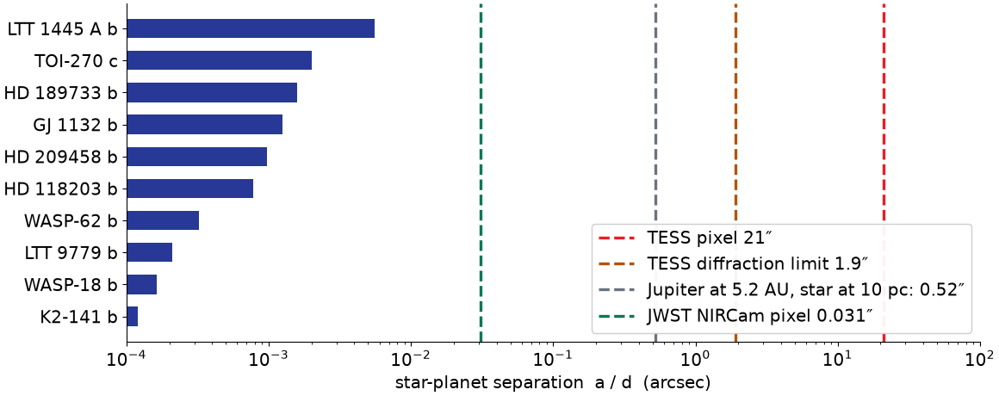
In one pixel
- largest: LTT 1445 A b, 5.5 mas = 0.026 % of a pixel
- Jupiter at 5.2 AU, star at 10 pc: 0.52″ = 2.5 % of a pixel; HR 8799 b: 68 AU at 39.4 pc = 1.7″ (Marois p. 4)
3 Methods. Direct imaging, PSF and contrast: the star's halo, the planet's faintness, and no coronagraph
PSF
50 % of the light in one pixel, 90 % in 4 × 4 pixels = 1.4′ (Ricker p. 7): a planet within 40″ lies in the halo. Diffraction limit of a 10.5 cm lens: 1.9″ at 800 nm, so the wide PSF is by design.
Contrast
Reflected light is Ag(Rp/a)2: Jupiter at 5.2 AU 2.5 × 10−9, Earth at 1 AU 5.5 × 10−10 (Ag = 0.3, ours). Our ten hot planets: 7.2 × 10−7 to 2.7 × 10−4, but too close to resolve.
No coronagraph
Payload: four cameras and a data handling unit (Ricker p. 5). JWST uses a coronagraph at 2.7 and 4.44 µm (Gardner p. 47). Imaging is hard: small separation and large contrast together (Marois p. 1).
3 Methods. Direct imaging, the wavelength: TESS sees reflected light at 0.6–1 µm, young giants glow at 2–20 µm
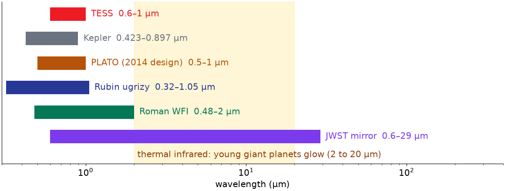
Why the infrared
- a 1000 K, Jupiter-size planet round a Sun-like star: contrast 3.5 × 10−9 at 0.8 µm, 2.0 × 10−5 at 2 µm, 3.2 × 10−4 at 4.4 µm (Planck, ours)
3 Methods. Direct imaging, how much resolution is enough: a pixel of 0.005″ to 3.5″ and a mirror of 0.4 to 22 m
| a \ d | 10 pc | 20 pc | 50 pc | 100 pc |
|---|---|---|---|---|
| 1 AU | 0.10″ | 0.05″ | 0.02″ | 0.01″ |
| 5 AU | 0.50″ | 0.25″ | 0.10″ | 0.05″ |
| 10 AU | 1.00″ | 0.50″ | 0.20″ | 0.10″ |
| 30 AU | 3.00″ | 1.50″ | 0.60″ | 0.30″ |
| 70 AU | 7.00″ | 3.50″ | 1.40″ | 0.70″ |
Separation θ = a/d.
| θ needed | 0.8 µm | 1.6 µm | 4.4 µm |
|---|---|---|---|
| 0.05″ | 4.0 m | 8.1 m | 22.1 m |
| 0.1″ | 2.0 m | 4.0 m | 11.1 m |
| 0.5″ | 0.4 m | 0.8 m | 2.2 m |
Mirror D = 1.22 λ/θ. TESS: 0.105 m.
3 Methods. Spatial against temporal resolution: the trade is field of view, not cadence
Fixed pixels: FOV = N × scale2
TESS: 4 × 40962 pixels × (21″)2 = 2 284 deg² (quoted 2300). JWST NIRCam, one module: 0.0012 deg². Ratio 1 835 588. A pixel 10 times finer means 100 times less sky.
Cadence on the target
Once a telescope stares at one star, it can read fast. A planet is so faint that photons arrive slowly, so the science image needs a long exposure (our reasoning): hours of integration, not a faster frame rate.
What is given up
A narrow field images one star at a time: the sky survey rate falls by the field ratio, millions of times. Better detectors do not remove the trade: etendue, area times field, is conserved (our reasoning).
3 Methods. Does imaging need TESS? Only for stars and atmospheres, not for planets: the two populations hardly overlap
| TESS discoveries | Imaged planets | |
|---|---|---|
| Number in the archive | 1 027 | 99 |
| Median semi-major axis | 0.060 AU | 151 AU |
| Middle 80 % of a | 0.02 to 0.19 AU | 13 to 1 965 AU |
| Median period | 5.7 d | 90 yr |
| On the other side of 1 AU | 2 planets have a > 1 AU | 1 planet has a < 1 AU |
What imaging uses
Young, nearby stars, for example in moving groups (Bowler p. 3), with positions from catalogs such as Gaia; not a map made by TESS.
Where TESS does help
Atmospheres: the ecliptic poles are the best places for JWST follow-up (Ricker p. 1); the TESS input catalog is built on Gaia DR2.
4 TESS. The satellite in nine numbers
| Quantity | Design value | Where |
|---|---|---|
| Orbit | Elliptical, 13.7 d, in 2:1 resonance with the Moon; 17 to 59 Earth radii from the Earth | Sec 3.8, 6 |
| Cameras | 4 identical lenses, f/1.4, pupil 10.5 cm; band 600 to 1000 nm | Table 1 |
| Detector | 4 CCDs per camera, 2048 × 2048 pixels of 15 µm | Sec 4.2 |
| Field of view | 24° × 24° per camera; 24° × 96° = 2300 deg² together | Table 1 |
| One pixel | 0.35′ = 21″ = 0.0058° | Table 1 |
| Light in a pixel | 50 % inside one pixel; 90 % inside 4 × 4 pixels (1.4′) | Table 1 |
| One sector | 2 orbits = 27.4 d, then the cameras turn to the next field; 13 sectors per hemisphere | Sec 7.2 |
| Sampling | 2-s frames; 60 are summed into one 2-min cadence for the pre-selected stars; full frames every 30 min | Sec 3.7, 4.3 |
| Targets | At least 200 000 stars at 2 min, IC about 4 to 13 | Abstract |
Design values from Ricker et al. 2015. The next slides check them on our 21 SPOC files.
4 TESS. Where it looks: 13 sectors per hemisphere, 27.4 days each

Sky coverage (design)
- four cameras in a row: 24° × 96° = 2300 deg², from ecliptic latitude 6° to the pole
- each sector: 2 orbits = 27.4 d, then 27° east; a hemisphere in 1 yr, the sky in 2 yr
- observed at least 27 d: 30 000 deg² (73 % of the sphere computed); over 80 d: 2 800 deg²; over 300 d: 900 deg² near the poles
4 TESS. Sampling: one point every 2 minutes, sectors of about 27 days, gaps of 1 to 8 days
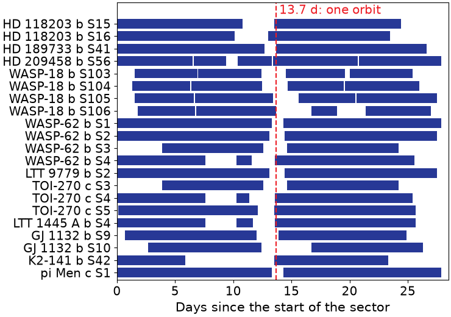
Measured on our files
- all 21 files: 120 s cadence = 60 frames of 2 s; effective exposure 95 s (header DEADC 0.792)
- sector span 24.6 to 28.4 d (median 26.6)
- largest gap 1.1 to 7.7 d (median 2.2); good cadences 63 to 96 % of the span (median 81)
- one transit lasts 0.4 to 5.6 h = 11 to 169 cadences
4 TESS. Data products: 2-min light curves from the start; full frames every 30 min, then 10 min, then 200 s
| Product | Cadence | Available | Used here |
|---|---|---|---|
| SPOC light curve, target pixels | 120 s | From sector 1 | Yes: all 21 files (PDCSAP flux) |
| SPOC fast light curve | 20 s | First extended mission, from sector 27 | No |
| Full-frame images | 30 min | Years 1 and 2 (sectors 1 to 26) | No |
| Full-frame images | 10 min | Years 3 and 4 (sectors 27 to 55) | No |
| Full-frame images | 200 s | Years 5 on (sector 56 and later) | No |
Our files
16 sectors: 1, 2, 3, 4, 5, 9, 10, 15, 16, 41, 42, 56, 103, 104, 105, 106. First observation 2018-07-25, last 2026-07-11: years 1, 2, 4, 5 and 8 of the mission.
Time stamps
BTJD = BJDTDB − 2 457 000 d. Each cadence is the sum of 60 frames; flux units are e−/s.
4 TESS. Resolution: one pixel is 21″ = 0.0058°, and 90 % of a star's light lands within 1.4′
| Quantity | Value | Source |
|---|---|---|
| One pixel | 15 µm = 0.35′ = 21″ = 0.0058° (171 pixels per degree) | WCS in our files: 19.1 to 21.1″ |
| One camera | 2 × 2 CCDs of 2048 pixels = 4096 pixels = 23.9° | computed; 24° quoted |
| Half of a star's light | inside one pixel (21″) | Ricker et al. 2015, Table 1 |
| 90 % of the light | inside 4 × 4 pixels (84″ = 1.4′) | images are undersampled |
| One pixel on the sky | 21″ × distance: 140 AU at LTT 1445 A (6.9 pc) to 3 710 AU at WASP-62 (176 pc) | catalog distance |
| Our apertures | 13 to 31 pixels = equal radius 41 to 64″ | measured on our files |
The equal radius is sqrt(N/π) pixels for the N pixels of the optimal aperture.
4 TESS. Our ten apertures: LTT 1445 A b has only 42 % of its light from the target
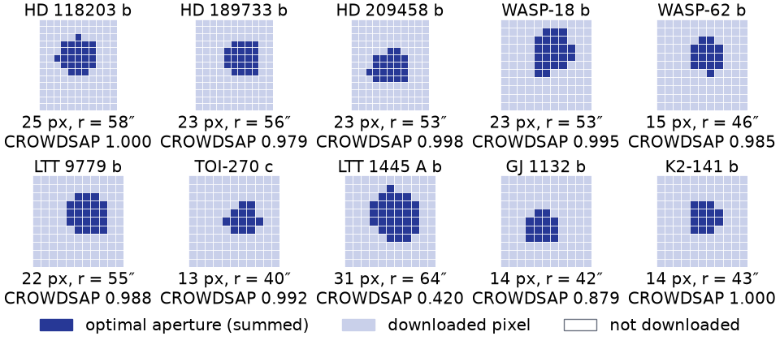
4 TESS. Precision: 67 to 477 ppm per hour, and 11 to 169 points per transit
| Planet | T mag | Cam | Sectors | Px / r | CROWD | CDPP 1h | Transit / n | Depth |
|---|---|---|---|---|---|---|---|---|
| 1 HD 118203 b | 7.5 | 4 | 2 of 5 | 25 / 59″ | 1.00 | 113 | 5.6 h / 169 | 3054 |
| 2 HD 189733 b | 6.8 | 1 | 1 of 3 | 23 / 56″ | 0.98 | 67 | 1.8 h / 55 | 23752 |
| 3 HD 209458 b | 7.1 | 1 | 1 of 2 | 23 / 53″ | 1.00 | 79 | 3.1 h / 92 | 14699 |
| 4 WASP-18 b | 8.8 | 2 3 4 | 4 of 10 | 23 / 56″ | 0.99 | 168 | 2.2 h / 66 | 9716 |
| 5 WASP-62 b | 9.7 | 4 | 4 of 38 | 17 / 49″ | 0.98 | 203 | 3.8 h / 114 | 12196 |
| 6 LTT 9779 b | 9.1 | 2 | 1 of 5 | 22 / 55″ | 0.99 | 189 | 0.4 h / 11 | 1932 |
| 7 TOI-270 c | 10.5 | 3 | 3 of 7 | 13 / 42″ | 0.97 | 334 | 1.7 h / 50 | 3305 |
| 8 LTT 1445 A b | 8.8 | 2 | 1 of 3 | 31 / 64″ | 0.42 | 332 | 1.4 h / 41 | 2208 |
| 9 GJ 1132 b | 10.8 | 2 | 2 of 6 | 13 / 41″ | 0.88 | 477 | 0.8 h / 23 | 2244 |
| 10 K2-141 b | 10.0 | 2 | 1 of 3 | 14 / 43″ | 1.00 | 325 | 0.9 h / 28 | 355 |
CDPP 1 h: combined differential photometric precision on 1 h, SPOC header keyword (median of the sectors used, ppm). Cam: camera. Sectors: used of available. Px / r: optimal-aperture pixels and equal radius. CROWD: lowest CROWDSAP. Transit / n: duration and number of cadences. Depth: (Rp/R★)² in ppm, our fit.
4 TESS. Where it flies: a 13.7-day orbit between 17 and 59 Earth radii
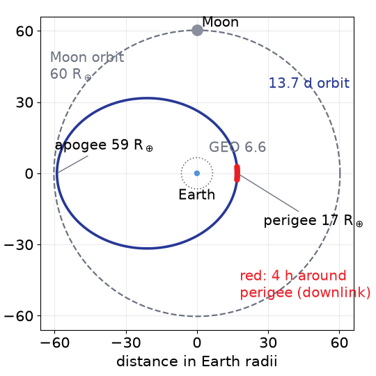
Path and orbit
- launch from Cape Canaveral into a parking orbit (28.5°); two burns raise the apogee to 400 000 km; a lunar flyby lifts the ecliptic inclination to about 40°; final orbit about 60 days after launch (nominal scenario)
- final orbit: 17 to 59 R⊕, 13.7 d, 2:1 with the Moon; Kepler's third law with a = 38 R⊕ gives 13.7 d (computed)
- data: downlinked every 13.7 d at perigee, 4 h at 100 Mb/s; then the cameras repoint
- why here: outside the radiation belts, no long eclipses, stable for decades without station-keeping
4 TESS. Who launched it and what it cost: SpaceX, about $87 million for the launch
| Question | Answer | Source |
|---|---|---|
| Who runs it | MIT leads the mission; the Explorers Program at NASA Goddard oversees it; NASA's Launch Services Program (Kennedy) manages the launch | NASA release C14-049 |
| Who launched it | SpaceX, Falcon 9, from Cape Canaveral AFS on 18 April 2018 at 6:51 p.m. EDT. NASA chose SpaceX on 16 Dec 2014 (Falcon 9 v1.1, liftoff then targeted for Aug 2017) | NASA release; MIT News |
| Cost of the launch | About $87 million to NASA: launch service, spacecraft processing, payload integration, tracking, data and telemetry | NASA release C14-049 |
2006
$20 million: first proposal, private (MIT)
2006 to 2008
$120 million: proposal to NASA (MIT)
Dec 2014
$87 million: launch alone (NASA)
Apr 2018
$337 million: total reported (Physics World)
4 TESS. Could Vietnam launch a TESS? Not on its own rocket, but a launch can be bought
Evidence (sourced)
- VNREDSat-1 flew on a Vega rocket from French Guiana on 7 May 2013; the whole programme cost EUR 55.8 million
- LOTUSat-1 (570 kg) was ‘awaiting Japan’s launch vehicle’ in July 2024; a facility for satellites under 180 kg was planned for December 2025
- In August 2026 VinSpace chose a SpaceX Transporter rideshare for its first satellites, in the second quarter of 2027
- TESS: $87 million for the launch alone
Our reasoning
- Reaching an apogee of 400 000 km from a 300 km circular orbit needs Δv = 3.1 km/s on top of 7.7 km/s: a heavy launcher, not a small rocket (computed)
- Latitude is not the obstacle: 8.6° N gives 460 m/s of Earth rotation against 409 at Cape Canaveral, +51 m/s, 0.7 % of orbital speed (computed)
- We found no report of a Vietnamese orbital rocket or spaceport (one web search)
- Realistic: buy a launch, ride as a secondary passenger (CHEOPS did), or build ground robotic transit telescopes (MEarth found GJ 1132 b)
Judgement, not a source: a self-launched TESS-class mission is not realistic soon; our computations use standard constants (code/28_orbit_figure.py).
4 TESS. Where each design number comes from: instrument paper, section and PDF page
| Statement | Value | Where | PDF page |
|---|---|---|---|
| Elliptical orbit around the Earth | perigee 17 R E, apogee 59 R E | Ricker 2015, Sec 6 | p. 8 |
| Period and resonance with the Moon | 13.7 d, 2:1 with the Moon's orbit | Ricker 2015, Sec 6 | p. 8 |
| Launch and first orbit (nominal scenario) | Cape Canaveral, parking orbit 28.5 deg | Ricker 2015, Sec 6, Fig 5 | p. 8 |
| Lunar flyby raises the ecliptic inclination | to about 40 deg | Ricker 2015, Sec 6 | p. 8 |
| Downlink rhythm | every 13.7 d at perigee | Ricker 2015, Sec 4.3 | p. 7 |
| Field of view | 24 x 24 deg each; 24 x 96 deg = 2300 sq. deg | Ricker 2015, Table 1 | p. 7 |
| Pixel size and PSF | 15 micron = 0.35 arcmin | Ricker 2015, Sec 4.1 | p. 5 |
| Light in 4 x 4 pixels | 90 % in 4 x 4 pixels = 1.4 arcmin | Ricker 2015, Table 1 | p. 7 |
| A sector lasts two orbits | 27.4 d, boresight nearly anti-solar | Ricker 2015, Sec 7.2 | p. 9 |
| Area observed at least 27 d | 30 000 sq. deg | Ricker 2015, Sec 7.2 | p. 11 |
| 2-min cadence | 60 frames of 2 s summed | Ricker 2015, Sec 4.3 | p. 7 |
PDF pages of arXiv:1406.0151v3. Each quote is checked in data/literature/tess_fact_sources.csv.
4 TESS. Web pages used, saved on 21 November 2026
| Source | Address | Used for |
|---|---|---|
| MIT News, TESS takes off | science.mit.edu/tess-takes-off | Launch vehicle, site and time |
| NASA contract release C14-049 | www.nasa.gov/news-release/nasa-awards-launch-services-contract-for-t… | Total cost to NASA of the launch |
| Physics World, 19 April 2018 | physicsworld.com/a/nasa-launches-tess-exoplanet-mission/ | Total mission cost as reported (secondary source) |
| STScI MAST, TESS mission page | archive.stsci.edu/missions-and-data/tess | Pixel scale on the archive page |
| NASA HEASARC, TESS data products | heasarc.gsfc.nasa.gov/docs/tess/data-products.html | Full-frame cadence by cycle |
| Government of Viet Nam online newspaper | en.baochinhphu.vn/vns-first-remote-sensing-satellite-launched-111166… | VNREDSat-1 was launched abroad |
| VietnamNet Global, 15 July 2024 | vietnamnet.vn/en/vietnam-prepares-for-lotusat-1-satellite-launch-wit… | LOTUSat-1 waits for a Japanese launcher |
| Al Jazeera, 11 August 2026 | aljazeera.com/economy/2026/8/11/vietnams-vinspace-announces-deal-wit… | Vietnam's 2027 launch is a SpaceX rideshare |
Copies in data/raw/tess_docs/; each quoted phrase was found in the saved page.
4 TESS. What was launched: one satellite, four cameras, sixteen CCDs, one band
| Item | Count | Source |
|---|---|---|
| Satellite | 1, launched 18 April 2018 by SpaceX Falcon 9 from Cape Canaveral | NASA; MIT News |
| Cameras | 4 identical; each with 7 lens elements, f/1.4, pupil 10.5 cm | Ricker p. 5 |
| CCDs | 16 (4 per camera); each camera is 4096 × 4096 pixels, the satellite 67.1 million imaging pixels (computed) | Ricker p. 6 |
| Wavelength band | one band, 600 to 1000 nm: long-pass filter × CCD response | Ricker p. 4 |
| Data products | 2 kinds of images (stamps, full frames) and the light curves, cotrending vectors derived from them | STScI manual |
| Instruments that are not there | no spectrograph, no coronagraph | Ricker p. 5 |
‘How many types of satellites?’ One: TESS is not a constellation. The other missions of our project are on the next slide.
4 Missions behind our ten planets: 4 found from space (TESS, K2), 6 from the ground
| Planet | Discovered with | Method | Year | Platform |
|---|---|---|---|---|
| 1 HD 118203 b | Haute-Provence Observatory | Radial Velocity | 2005 | ground |
| 2 HD 189733 b | Haute-Provence Observatory | Radial Velocity | 2005 | ground |
| 3 HD 209458 b | W. M. Keck Observatory | Radial Velocity | 1999 | ground |
| 4 WASP-18 b | SuperWASP | Transit | 2009 | ground |
| 5 WASP-62 b | SuperWASP | Transit | 2012 | ground |
| 6 LTT 9779 b | TESS | Transit | 2020 | space |
| 7 TOI-270 c | TESS | Transit | 2019 | space |
| 8 LTT 1445 A b | TESS | Transit | 2019 | space |
| 9 GJ 1132 b | Cerro Tololo Inter-American Observatory | Transit | 2015 | ground |
| 10 K2-141 b | K2 | Transit | 2018 | space |
From the NASA Exoplanet Archive, table pscomppars. All ten are re-measured here with TESS SPOC light curves. Other missions in this deck: Kepler, CHEOPS, Gaia (parallaxes behind the TESS input catalog), JWST and HST (atmospheres).
4 TESS. The wavelength range against the other missions: one band, 600 to 1000 nm
4 TESS. A single pixel is 21″: how it follows from the optics, and how it compares with other missions
| Mission | Pixel scale | Times finer than TESS | Source |
|---|---|---|---|
| TESS | 21″ | 1 | Ricker p. 5 |
| Kepler | 3.98″ | 5.3 | Koch p. 16 |
| PLATO (2014 design) | 15″ | 1.4 | Rauer p. 41 |
| Gaia | 0.059″ × 0.177″ | 357 | Gaia p. 9 |
| Rubin | 0.2″ | 105 | Ivezic p. 17 |
| Roman WFI | 0.11″ | 191 | Akeson p. 13 |
| JWST NIRCam | 0.031″ and 0.063″ | 677 and 333 | STScI JDox |
4 TESS. The aperture grids are images: stamp, mask, sum, and the crowding that dilutes the transit
What it is
A target pixel file: an 11 × 11 image every 2 min. The grid shows which pixels were summed.
What it is for
The dark pixels summed give the star's light curve; neighbours in the mask dilute the dip.
What CROWDSAP says
The share of mask flux from the target: LTT 1445 A b 0.42. Ignoring it shrinks Rp by √2.38 = 1.54.
| Planet | CROWDSAP | 1 / CROWDSAP | PDCSAP depth / SAP depth (measured) |
|---|---|---|---|
| 1 HD 118203 b | 1.000 | 1.00 | 0.99 |
| 7 TOI-270 c | 0.974 | 1.03 | 1.02 |
| 8 LTT 1445 A b | 0.420 | 2.38 | 2.32 |
| 9 GJ 1132 b | 0.879 | 1.14 | 1.09 |
4 After TESS. Trade-offs of the next telescopes: field of view, pixel, cadence, revisit time
| Mission | Field of view | Pixel | Cadence | Revisit |
|---|---|---|---|---|
| TESS | 24° × 96° = 2300 deg² | 21″ | 120 s, 20 s; full frames 30 min, 10 min, 200 s | 27.4 d per sector; 2 yr for the sky |
| Kepler (reference) | 115 deg² | 3.98″ | 1765.8 s and 58.9 s | one field, continuous |
| PLATO (2014 design) | 2232 deg² | 15″ | 25 s and 2.5 s | long stare; launch: ESA, end of 2026 |
| Roman | 0.281 deg² | 0.11″ | 15 min (bulge survey) | 72-day seasons; launched 30 Aug 2026 |
| Rubin LSST | 9.6 deg² | 0.2″ | 30 s per visit | every 3 d on average |
| JWST NIRCam | a few arcmin² per module | 0.031″ and 0.063″ | set by the observer | pointed, no automatic repeat |
PLATO: 26 cameras on the ESA page of 2026, 34 telescopes in the 2014 paper; another ESA item says early 2027, so the date is not settled here.
4 After TESS. The rule behind the table: FOV ∝ N × scale², staring against scanning, SNR ∝ D√t

Three rules
- FOV = N × scale2 gives the quoted fields: TESS 2284 / 2300, Kepler 116 / 115, Roman 0.281 / 0.281, Rubin 9.9 / 9.6 deg²
- staring (TESS, PLATO): fast cadence, rare return; scanning (Rubin): frequent return, sparse sampling (our reading)
- SNR ∝ D√t: half the mirror needs four times the exposure
4 Sources. What the checkpoint notes got right, and what we corrected, part 1
| Claim in the notes | Check | Result |
|---|---|---|
| ‘Stars in full frames’ is a heading of the TESS paper | Sec 8.4 is ‘Full Frame Images’ (Ricker p. 13) | label shortened by us |
| Full frames hold tens of millions of stars | about 106 objects per image, about 20 million in two years (Ricker p. 14) | corrected |
| PDCSAP = (flux − (1 − C) mean) / (C × f) | median PDCSAP/SAP = C/f within 0.34 % on 20 files | divide by f only |
| a/R★ = √[(1+k)2 − b2] / sin(πT14/P) | exact form with cos2 term; shortcut off by up to 2.8 % | corrected |
| Apogee 373 000 km | 59 R⊕ = 376 000 km (Ricker p. 8) | corrected |
| 1 027 planets was a pre-launch forecast | it is the archive count of planets discovered by TESS on 2026-11-21; Ricker expects thousands below Neptune size | corrected |
| 471 is a catalog of planets with masses | 471 is our shortlist after the cuts T mag < 11, P < 15 d, S/N > 12 | corrected |
Each check is a quotation with a PDF page, or a number computed from our files.
4 Sources. What the checkpoint notes got right, and what we corrected, part 2
| Claim in the notes | Check | Result |
|---|---|---|
| HR 8799 at 10 pc, planets at 15 to 70 AU | 39.4 pc, planets at 24, 38 and 68 AU (Marois p. 4); separations 0.6 to 1.7″ | corrected |
| Centroid precision about 0.2″ (1/100 pixel) | measured error 0.0010 to 0.010″ over several transits | better, ours |
| TESS avoids the plane that holds the Galactic centre | strips start at 6°; the centre is at −5.5° (computed) | at the edge |
| PLATO: launch end of 2026, 26 cameras | ESA page: end of 2026, 26 cameras; 2014 paper: 34 telescopes; other ESA item: 2027 | not settled |
| Roman expected 2026–2027 | NASA: launched 30 August 2026, Falcon Heavy, Launch Complex 39A | already launched |
| TTV listed under TESS alone | timing is a TESS product; mass needs a dynamical model, usually with velocities | kept as partner |
| Solar νmax 3090 µHz, Δν 135.1 µHz | Huber p. 2 (2011) | confirmed |
| Pixel 21″, 90 % of light in 1.4′, 600 to 1000 nm | Table 1 (Ricker p. 7), Fig 1 (Ricker p. 4) | confirmed |
‘Not settled’ means the sources we hold disagree; check ESA before quoting a launch date.
5 Sample. Six ways a catalog divides exoplanets; our grouping uses the first four
| Axis | Classes | Used here | Column |
|---|---|---|---|
| Radius | under 1.25 R⊕ Earth-size; 1.25 to 2 Super-Earth; 2 to 4 Sub-Neptune; 4 to 8 Neptune/Saturn; 8 and more Jupiter-size | Yes | pl_rade |
| Orbital period | under 1 d ultra-short (USP); 1 to 3 hot; 3 to 7 warm; 7 to 15 cool | Yes | pl_orbper |
| Equilibrium temperature | above 2000 K ultra-hot; 1200 to 2000 hot; 500 to 1200 warm; below 500 K temperate | Yes | pl_eqt |
| Host star | M dwarf (under 3900 K); K (under 5200); G (under 6000); F and hotter | Yes | st_teff |
| Discovery method | transit, radial velocity, imaging, microlensing, … | Recorded, not used to choose | discoverymethod |
| System | one planet or several in the same system | Recorded, not used to choose | sy_pnum |
The class edges are ours (code/02_group_candidates.py); other papers place them elsewhere. Mass, density, insolation and the radius valley are also used in the literature, not here.
5 Sample. Our ten against the 471: every size class and star type is present, the 7 to 15 d period class is empty
Radius
| Class | 471 catalog | Our 10 |
|---|---|---|
| Earth-size | 14 (3 %) | 1 |
| Super-Earth | 33 (7 %) | 2 |
| Sub-Neptune | 138 (29 %) | 1 |
| Neptune/Saturn | 46 (10 %) | 1 |
| Jupiter-size | 240 (51 %) | 5 |
Orbital period
| Class | 471 catalog | Our 10 |
|---|---|---|
| USP (<1 d) | 15 (3 %) | 3 |
| Hot (1-3 d) | 98 (21 %) | 2 |
| Warm (3-7 d) | 219 (46 %) | 5 |
| Cool (7-15 d) | 139 (30 %) | 0 |
Equilibrium temperature
| Class | 471 catalog | Our 10 |
|---|---|---|
| Ultra-hot (>2000 K) | 39 (8 %) | 2 |
| Hot (1200-2000 K) | 195 (41 %) | 5 |
| Warm (500-1200 K) | 223 (47 %) | 1 |
| Temperate (<500 K) | 14 (3 %) | 2 |
Host star
| Class | 471 catalog | Our 10 |
|---|---|---|
| M dwarf | 47 (10 %) | 3 |
| K dwarf | 101 (21 %) | 2 |
| G (Sun-like) | 173 (37 %) | 2 |
| F/hotter | 150 (32 %) | 3 |
Red: a class that holds at least 25 % of the 471 planets while our ten hold at most 40 % of that share. Bars: share of the 471.
5 Sample. Is ten enough? Enough to show the method, not to say anything about a class
| Ten planets | |
|---|---|
| Enough for | Showing that the pipeline runs from 1.2 to 15.6 R⊕, periods of 0.28 to 6.1 d, T mag 6.8 to 10.8, all four host-star types and all four TESS cameras. |
| Not enough for | Statements per class: Earth-size, Neptune/Saturn and Sub-Neptune have one planet each. No planet has a period of 7 to 15 d (139 of 471); our longest is 6.1 d, so the blind search to 15 d is untested above that. Radial-velocity discoveries: 3 of 10, 8 of 471. |
| Weak spot | The three smallest, shortest-period planets were searched near the catalog period; K2-141 b searched blind gave 5.68 d, the catalog value is 0.280 d. |
The assignment slip gives the title only, no number of planets.
6 Light curves. 1 HD 118203 b: raw, detrended and folded
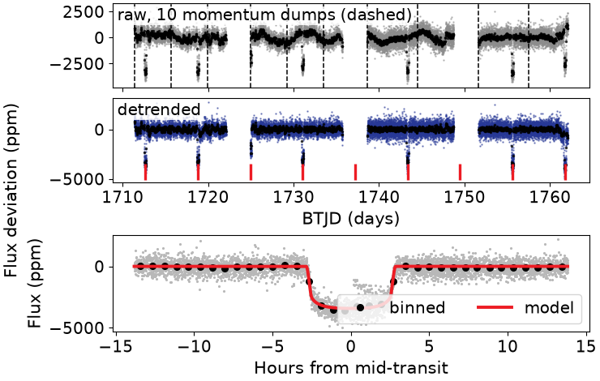
Image obtained
- 7 transits folded, duration 4.32 h, 10 momentum dumps
- depth at mid-transit 3,418 ppm observed, 3,054 ppm model; scatter 388 ppm per 2 min
- detrending changed the rms by under 20 %: the raw curve is already flat
6 Light curves. 2 HD 189733 b: raw, detrended and folded

Image obtained
- 12 transits folded, duration 1.44 h, 4 momentum dumps
- depth at mid-transit 24,834 ppm observed, 23,752 ppm model; scatter 327 ppm per 2 min
- detrending cut the rms from 4,945 to 3,593 ppm: stellar variability
6 Light curves. 3 HD 209458 b: raw, detrended and folded

Image obtained
- 8 transits folded, duration 2.16 h, 4 momentum dumps
- depth at mid-transit 15,798 ppm observed, 14,699 ppm model; scatter 334 ppm per 2 min
- detrending changed the rms by under 20 %: the raw curve is already flat
6 Light curves. 4 WASP-18 b: raw, detrended and folded
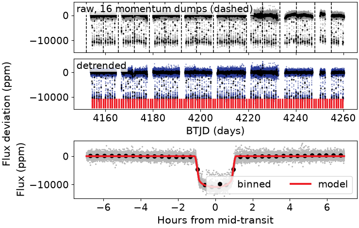
Image obtained
- 97 transits folded, duration 2.16 h, 16 momentum dumps
- depth at mid-transit 10,688 ppm observed, 9,716 ppm model; scatter 675 ppm per 2 min
- detrending changed the rms by under 20 %: the raw curve is already flat
6 Light curves. 5 WASP-62 b: raw, detrended and folded

Image obtained
- 22 transits folded, duration 3.12 h, 38 momentum dumps
- depth at mid-transit 13,619 ppm observed, 12,196 ppm model; scatter 880 ppm per 2 min
- detrending changed the rms by under 20 %: the raw curve is already flat
6 Light curves. 6 LTT 9779 b: raw, detrended and folded
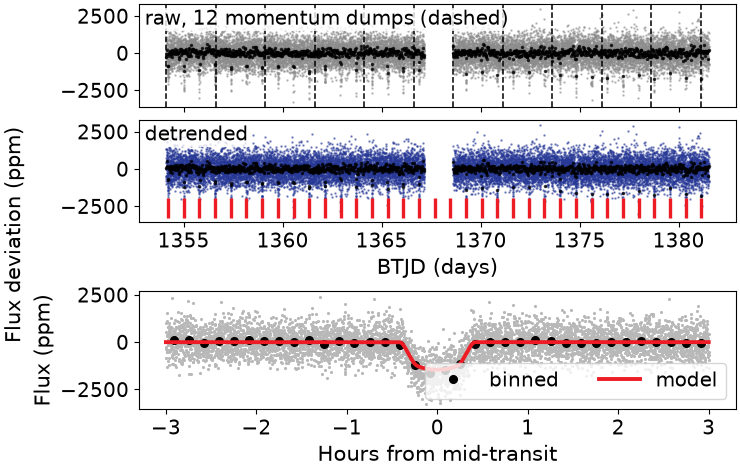
Image obtained
- 34 transits folded, duration 0.55 h, 12 momentum dumps
- depth at mid-transit 1,585 ppm observed, 1,932 ppm model; scatter 629 ppm per 2 min
- detrending changed the rms by under 20 %: the raw curve is already flat
6 Light curves. 7 TOI-270 c: raw, detrended and folded

Image obtained
- 11 transits folded, duration 1.44 h, 25 momentum dumps
- depth at mid-transit 3,762 ppm observed, 3,305 ppm model; scatter 1309 ppm per 2 min
- detrending changed the rms by under 20 %: the raw curve is already flat
6 Light curves. 8 LTT 1445 A b: raw, detrended and folded

Image obtained
- 4 transits folded, duration 1.07 h, 8 momentum dumps
- depth at mid-transit 2,447 ppm observed, 2,208 ppm model; scatter 1067 ppm per 2 min
- detrending cut the rms from 2,636 to 1,238 ppm: stellar variability
6 Light curves. 9 GJ 1132 b: raw, detrended and folded

Image obtained
- 26 transits folded, duration 0.96 h, 16 momentum dumps
- depth at mid-transit 2,379 ppm observed, 2,244 ppm model; scatter 1957 ppm per 2 min
- detrending changed the rms by under 20 %: the raw curve is already flat
6 Light curves. 10 K2-141 b: raw, detrended and folded

Image obtained
- 57 transits folded, duration 0.96 h, 4 momentum dumps
- depth at mid-transit 442 ppm observed, 355 ppm model; scatter 1036 ppm per 2 min
- detrending cut the rms from 1,786 to 1,235 ppm: stellar variability
7 Plots. Fig 5 type: where our planets sit among the known ones
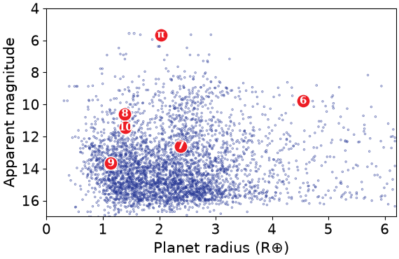
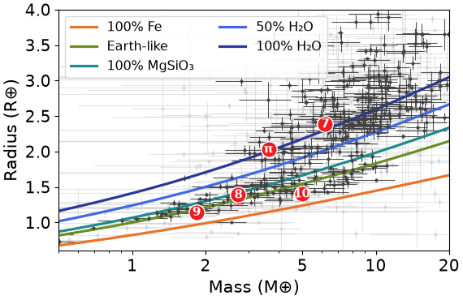
Image obtained
- brightest hosts: HD 209458 b (V 7.7), HD 189733 b (V 7.7); 33 known planets have V < 8
- 0 = Earth-like, 1 = water: TOI−270 c 1.1; LTT 1445 A b 0.1; GJ 1132 b −0.1; K2−141 b −0.2
7 Diagnostics. Odd against even transits: three planets pass 3σ, but only by 1 to 17 %

Image obtained
- outside 3σ: HD 209458 b, WASP-18 b, pi Men c
- depth differences: HD 209458 b 1.4 %, WASP-18 b 1.1 %, pi Men c 16.4 %
- π Men c has only 2 odd and 3 even transits; the per-transit scatter (31 ppm) gives about 1.3σ
7 Diagnostics. Flux at phase 0.5: WASP-18 b shows its own light, 352 ppm
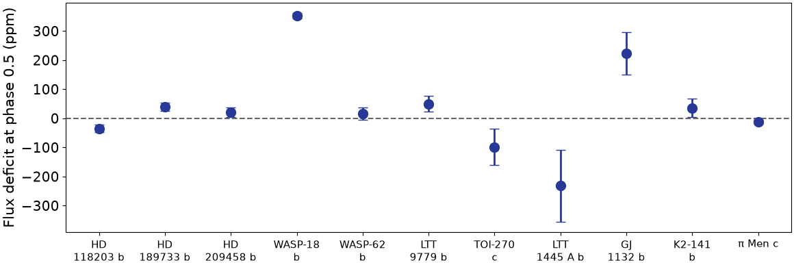
Image obtained
- WASP-18 b: 352 ± 9 ppm (white noise); ×β 2.09 gives ±19
- Shporer+2019 (TESS sector 2): secondary eclipse 341 +17 −18 ppm, so the two agree
- all other planets are below 3σ; GJ 1132 b is 223 ± 72 ppm, not significant after ×β
7 Diagnostics. Red noise: averaging helps less than 1/√N, by a factor β of 1.0 to 3.6
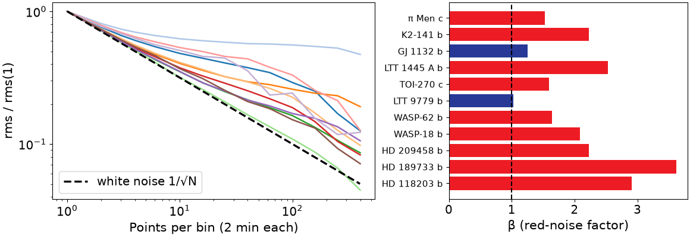
Image obtained
- largest β: HD 189733 b 3.62, HD 118203 b 2.91; smallest: LTT 9779 b 1.03
- π Men c β = 1.52, per-point rms 124 ppm: the quietest light curve of the eleven
7 Results. Eight of ten radii within 4 % of the catalog; periods within 0.03 %

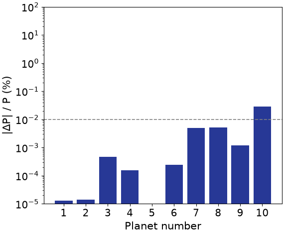
7 Results. A difference of 0.3 to 10 % from the catalog, read in units of the error

How to read it
- 9 of 10 ratios within 2σ; outside: WASP-18 b, -3.2 % (-2.9σ)
- K2-141 b is the largest difference, -9.7 %, but its error is 6.1 %: -1.5σ
- HD 189733 b: -0.8 % but -2.0σ; with red noise (×3.6) -0.6σ
- Papers scatter around the catalog too; WASP-18 b: two TESS analyses are both below it
Radius and period
- radii: 10 of 10 within 2σ (0.1 to 7.3 %)
- periods: 8 of 10; TOI-270 c -4.2σ, WASP-18 b +2.3σ
7 Results. The catalog values rarely come from the discovery paper
| Planet | Discovery paper | Period | Radius | Rp/R★ |
|---|---|---|---|---|
| 1 HD 118203 b | da Silva 2006 | Zhang 2024 | Zhang 2024 | Zhang 2024 |
| 2 HD 189733 b | Bouchy 2005 | Stassun 2017 | Stassun 2017 | Kokori 2023 |
| 3 HD 209458 b | Henry 2000 | Stassun 2017 | Stassun 2017 | Kokori 2023 |
| 4 WASP-18 b | Hellier 2009 | Cortés-Zuleta 2020 | Cortés-Zuleta 2020 | Cortés-Zuleta 2020 |
| 5 WASP-62 b | Hellier 2012 | Stassun 2017 | Stassun 2017 | Patel & Espinoza 2022 |
| 6 LTT 9779 b | Jenkins 2020 | Jenkins 2020 | Jenkins 2020 | Jenkins 2020 |
| 7 TOI-270 c | Günther 2019 | Kaye 2022 | Kaye 2022 | Kaye 2022 |
| 8 LTT 1445 A b | Winters 2019 | Pass 2023 | Pass 2023 | Pass 2023 |
| 9 GJ 1132 b | Berta-Thompson 2015 | Xue 2024 | Xue 2024 | Xue 2024 |
| 10 K2-141 b | Malavolta 2018 | Bonomo 2023 | Bonomo 2023 | Barragán 2018 |
8 Authors and us. Ratio Rp/R★ against 12 published values
| Planet | Paper | Published | Ours | Δ | Pull (ratio) | Pull (Rp) | Verdict |
|---|---|---|---|---|---|---|---|
| 1 HD 118203 b | Pepper 2020 | 0.0554 | 0.0553 | -0.2 % | -0.1σ | -0.8σ | agree |
| 2 HD 189733 b | Bouchy 2005 | 0.1720 | 0.1541 | -10.4 % | -5.8σ | -4.0σ | differ |
| 2 HD 189733 b | Knutson 2007 | 0.1545 | 0.1541 | -0.2 % | -0.6σ | -0.8σ | agree |
| 3 HD 209458 b | Charbonneau 2000 | 0.1186 | 0.1212 | +2.2 % | +1.4σ | +4.3σ | R differs |
| 4 WASP-18 b | Shporer 2019 | 0.0972 | 0.0986 | +1.5 % | +5.1σ | +1.1σ | differ |
| 5 WASP-62 b | Hellier 2012 | 0.1109 | 0.1104 | -0.4 % | -0.5σ | -0.6σ | agree |
| 6 LTT 9779 b | Jenkins 2020 | 0.0455 | 0.0440 | -3.4 % | -0.3σ | -0.1σ | agree |
| 7 TOI-270 c | Gunther 2019 | 0.0583 | 0.0575 | -1.3 % | -0.6σ | -0.3σ | agree |
| 8 LTT 1445 A b | Winters 2021 | 0.0451 | 0.0470 | +4.2 % | +0.7σ | +0.6σ | agree |
| 9 GJ 1132 b | Berta-Thompson 2015 | 0.0512 | 0.0474 | -7.5 % | -1.4σ | -0.1σ | agree |
| 10 K2-141 b | Malavolta 2018 | 0.0204 | 0.0188 | -7.5 % | -1.1σ | -1.0σ | agree |
| π pi Men c | Huang 2018 | 0.0170 | 0.0159 | -6.6 % | -1.0σ | -0.1σ | agree |
8 Authors and us. Where we differ, and why
HD 189733 b vs Bouchy+2005
Ratio 0.172 (2005) against our 0.1541. Spitzer 2007 gives 0.1545 and agrees with us (-0.25 %). The 2005 value is the outlier.
HD 209458 b vs Charbonneau+2000
Radius +11 %: the paper assumes R★ = 1.1, the archive says 1.19. The ratio differs only +2.2 %.
WASP-18 b vs Shporer+2019
Ratio +1.5 % (nominal 5σ), radius +6.2 % (+1.1σ). Different sectors; cause not found.
8 Authors and us. The checked PDFs: planet names in yellow, published numbers in green or red
| Item | What was done |
|---|---|
| Folder | literature/checking/, one annotated copy per PDF that names a project planet; originals in literature/pdf/ untouched |
| Yellow | every occurrence of the eleven planet names |
| Green or red | published period, ratio and radius, with a comment: published value, our value, difference, pull, verdict |
| Count | 38 PDFs annotated; 44 values marked consistent, 8 marked as deviations |
| Final check | 35 of 35 quoted numbers were found verbatim in the PDF text |
9 Literature. 150 verified papers in eleven sub-methods
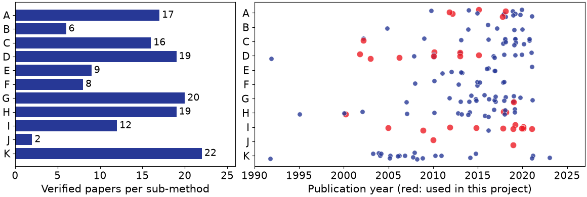
9 Literature. Every pipeline step has a paper behind it
| Step | What we do | Key papers (all verified) |
|---|---|---|
| Download | SPOC 2-min PDCSAP; TIC | Ricker 2015; Stassun 2018; Smith 2012; Stumpe 2012 |
| Detrend | Savitzky-Golay (lightkurve), masked | Vanderburg 2014; Foreman-Mackey 2017; Hippke 2019 (wotan) |
| Search | BLS | Kovács 2002; Hippke and Heller 2019 (TLS); Shallue 2018 |
| Fit | batman + emcee, q1,q2 | Mandel and Agol 2002; Kreidberg 2015; Foreman-Mackey 2013; Kipping 2013 |
| Errors | MCMC + detrend + R★; red noise | Pont 2006; Berger 2018; Torres 2010 |
| Vet | odd-even, phase 0.5 | Twicken 2018; Giacalone 2021; Morton 2012; Shporer 2019 |
| Interpret | mass-radius, radius valley | Zeng 2019; Fulton 2017; Owen and Wu 2017 |
9 Literature. A Mission, catalogs and pipelines
Sub-methods: Mission design and expected yield · Target catalogs (TIC, TOI) · SPOC pipeline: presearch conditioning, data validation · Full-frame image photometry (QLP, eleanor, difference imaging) · Gaia as the distance and radius anchor.
| Paper | Title |
|---|---|
| Ricker 2015 | The Transiting Exoplanet Survey Satellite ✓ |
| Stassun 2018 | The TESS Input Catalog and Candidate Target List ✓ |
| Smith 2012 | Kepler Presearch Data Conditioning II - A Bayesian Approach to Systematic Error… ✓ |
| Twicken 2018 | Kepler Data Validation I -- Architecture, Diagnostic Tests, and Data Products for… ✓ |
| Huang 2020 | Photometry of 10 Million Stars from the First Two Years of TESS Full Frame Images |
| Feinstein 2019 | eleanor: An open-source tool for extracting light curves from the TESS Full-Frame… |
17 verified papers in this group; ✓ = used in this project; full list in the appendix.
9 Literature. B Detrending and stellar variability
Sub-methods: Median / Savitzky-Golay filters (used here, via lightkurve) · Spline and self-flat-fielding (K2SFF) · Gaussian processes (celerite, K2SC) · Trend filtering algorithm (TFA) and wotan biweight.
| Paper | Title |
|---|---|
| Kovács 2005 | A Trend Filtering Algorithm for wide field variability surveys |
| Vanderburg 2014 | A Technique for Extracting Highly Precise Photometry for the Two-Wheeled Kepler… |
| Aigrain 2016 | K2SC: Flexible systematics correction and detrending of K2 light curves using… |
| Foreman-Mackey 2017 | Fast and scalable Gaussian process modeling with applications to astronomical time… |
| Hippke 2019 | Wotan: Comprehensive time-series de-trending in Python |
| Barros 2020 | Improving transit characterisation with Gaussian process modelling of stellar… |
6 verified papers in this group; ✓ = used in this project; full list in the appendix.
9 Literature. C Transit search and machine learning
Sub-methods: Box Least Squares (BLS, used here) · Transit Least Squares (physical shape) · Lomb-Scargle for periodic signals (RV, rotation) · Convolutional networks for triage and vetting · Citizen science (Planet Hunters TESS).
| Paper | Title |
|---|---|
| Kovács 2002 | A box-fitting algorithm in the search for periodic transits ✓ |
| Hippke 2019 | Transit Least Squares: Optimized transit detection algorithm to search for periodic… |
| Shallue 2018 | Identifying Exoplanets with Deep Learning: A Five Planet Resonant Chain around… |
| Osborn 2020 | Rapid Classification of TESS Planet Candidates with Convolutional Neural Networks |
| Eisner 2021 | Planet Hunters TESS II: Findings from the first two years of TESS |
16 verified papers in this group; ✓ = used in this project; full list in the appendix.
9 Literature. D Transit modelling and inference
Sub-methods: Analytic limb-darkened light curves (Mandel-Agol, batman: used here) · Geometry from the light curve (Seager and Mallen-Ornelas, Winn) · Limb-darkening laws and priors (Kipping q1,q2: used here; Claret for TESS) · MCMC samplers (emcee, affine-invariant: used here) · Packages: EXOFAST, juliet, exoplanet · Red noise and finite exposure time (Pont, Kipping).
| Paper | Title |
|---|---|
| Mandel 2002 | Analytic Light Curves for Planetary Transit Searches ✓ |
| Seager 2003 | On the Unique Solution of Planet and Star Parameters from an Extrasolar Planet… ✓ |
| Kreidberg 2015 | batman: BAsic Transit Model cAlculatioN in Python ✓ |
| Foreman-Mackey 2013 | emcee: The MCMC Hammer ✓ |
| Kipping 2013 | Efficient, uninformative sampling of limb darkening coefficients for two-parameter… ✓ |
| Pont 2006 | The effect of red noise on planetary transit detection ✓ |
19 verified papers in this group; ✓ = used in this project; full list in the appendix.
9 Literature. E Vetting and statistical validation
Sub-methods: Odd-even depth and secondary-eclipse tests · Centroid and background tests · Blend scenarios and false-positive probability (vespa, TRICERATOPS) · False-positive rates of Kepler · Ground-based photometric follow-up.
| Paper | Title |
|---|---|
| Torres 2011 | Modeling Kepler transit light curves as false positives: Rejection of blend… |
| Morton 2012 | An Efficient Automated Validation Procedure for Exoplanet Transit Candidates |
| Giacalone 2021 | Vetting of 384 TESS Objects of Interest with TRICERATOPS and Statistical Validation… |
| Fressin 2013 | The false positive rate of Kepler and the occurrence of planets |
| Bryson 2013 | Identification of Background False Positives from Kepler Data |
9 verified papers in this group; ✓ = used in this project; full list in the appendix.
9 Literature. F Stellar characterisation
Sub-methods: Masses and radii of normal stars · Gaia-based radii (Berger, Fulton and Petigura) · Stellar evolution models (Dartmouth) · M-dwarf scaling relations (Mann) · Asteroseismology.
| Paper | Title |
|---|---|
| Torres 2010 | Accurate masses and radii of normal stars: modern results and applications |
| Berger 2018 | Revised Radii of Kepler Stars and Planets Using Gaia Data Release 2 |
| Fulton 2018 | The California Kepler Survey VII. Precise Planet Radii Leveraging Gaia DR2 Reveal… |
| Dotter 2008 | The Dartmouth Stellar Evolution Database |
| Mann 2015 | How to Constrain Your M Dwarf: measuring effective temperature, bolometric… |
| Huber 2013 | Fundamental Properties of Stars using Asteroseismology from Kepler & CoRoT and… |
8 verified papers in this group; ✓ = used in this project; full list in the appendix.
9 Literature. G Populations, occurrence and composition
Sub-methods: Radius valley and evaporation · Mass-radius relations and composition curves (Zeng: used in our figure) · Probabilistic mass-radius (Chen and Kipping, Wolfgang) · Occurrence rates from Kepler · Core-powered mass loss.
| Paper | Title |
|---|---|
| Fulton 2017 | The California-Kepler Survey. III. A Gap in the Radius Distribution of Small Planets |
| Owen 2013 | Kepler planets: a tale of evaporation |
| Zeng 2019 | Growth Model Interpretation of Planet Size Distribution ✓ |
| Chen 2017 | Probabilistic Forecasting of the Masses and Radii of Other Worlds |
| Howard 2012 | Planet Occurrence within 0.25 AU of Solar-type Stars from Kepler |
| Van Eylen 2018 | An asteroseismic view of the radius valley: stripped cores, not born rocky |
20 verified papers in this group; ✓ = used in this project; full list in the appendix.
9 Literature. H Classic discoveries and science cases
Sub-methods: Radial-velocity discovery (51 Peg b) · First transits (HD 209458 b) · Kepler and K2 · TESS first results · Atmospheres and clouds · Habitable zone and TSM metrics.
| Paper | Title |
|---|---|
| Mayor 1995 | A Jupiter-mass companion to a solar-type star |
| Charbonneau 2000 | Detection of Planetary Transits Across a Sun-like Star ✓ |
| Borucki 2010 | Kepler Planet-Detection Mission: Introduction and First Results |
| Gillon 2017 | Seven temperate terrestrial planets around the nearby ultracool dwarf star… |
| Huang 2018 | TESS Discovery of a Transiting Super-Earth in the $π$ Mensae System ✓ |
| Kempton 2018 | A Framework for Prioritizing the TESS Planetary Candidates Most Amenable to… |
19 verified papers in this group; ✓ = used in this project; full list in the appendix.
9 Literature. K Search history: how exoplanets were found
Sub-methods: Doppler and pulsar timing (1992, 1995, ESPRESSO) · Ground transit surveys (HD 209458 b, TrES, HAT, SuperWASP, KELT, MEarth) · Space photometry (CoRoT, Kepler, K2, TESS, CHEOPS, PLATO) · Atmospheres and follow-up (HST, Spitzer, JWST) · Microlensing and direct imaging for context.
| Paper | Title |
|---|---|
| Wolszczan 1992 | A planetary system around the millisecond pulsar PSR1257 + 12 |
| Alonso 2004 | TrES-1: The Transiting Planet of a Bright K0 V Star |
| Pollacco 2006 | The WASP Project and the SuperWASP Cameras |
| Auvergne 2009 | The CoRoT satellite in flight : description and performance |
| Koch 2010 | Kepler Mission Design, Realized Photometric Performance, and Early Science |
| Benz 2021 | The CHEOPS mission |
22 verified papers in this group; ✓ = used in this project; full list in the appendix.
9 Literature. The discovery papers behind the planets we compare to
| Planet | Discovery or confirmation paper |
|---|---|
| 1 HD 118203 b | Pepper 2020 (TESS) |
| 2 HD 189733 b | Bouchy 2005; Knutson 2007 (Spitzer) |
| 3 HD 209458 b | Charbonneau 2000 |
| 4 WASP-18 b | Hellier 2009; Shporer 2019 (TESS) |
| 5 WASP-62 b | Hellier 2012 |
| 6 LTT 9779 b | Jenkins 2020 |
| 7 TOI-270 c | Günther 2019 |
| 8 LTT 1445 A b | Winters 2021 |
| 9 GJ 1132 b | Berta-Thompson 2015 |
| 10 K2-141 b | Malavolta 2018 |
| π pi Men c | Huang 2018; Gandolfi 2018 |
10 Data. Every catalog number can be re-queried: 52 of 52 values match today
| Check | Result |
|---|---|
| Columns compared | period, radius, ratio, stellar radius |
| Planets | 13 (10 + π Men c + 2 stress tests) |
| Equal to the downloaded CSV | 52 of 52 values (queried live, 16 Nov 2026) |
Table: pscomppars, one row per planet; file data/catalog_recheck.csv; script code/16_reproduce.py.
10 Data. The light curves: 21 SPOC files, each listed with its URL and md5
| Planet | Sectors | Files |
|---|---|---|
| 1 HD 118203 b | 15 16 | 2 |
| 2 HD 189733 b | 41 | 1 |
| 3 HD 209458 b | 56 | 1 |
| 4 WASP-18 b | 103 104 105 106 | 4 |
| 5 WASP-62 b | 1 2 3 4 | 4 |
| 6 LTT 9779 b | 2 | 1 |
| Planet | Sectors | Files |
|---|---|---|
| 7 TOI-270 c | 3 4 5 | 3 |
| 8 LTT 1445 A b | 4 | 1 |
| 9 GJ 1132 b | 9 10 | 2 |
| 10 K2-141 b | 42 | 1 |
| π pi Men c | 1 | 1 |
10 Data. Run the pipeline and expect these numbers
| Planet | Mode | Period (d) | Rp/R★ | Rp (R⊕) | Catalog |
|---|---|---|---|---|---|
| 1 HD 118203 b | blind | 6.13498 | 0.0553 | 12.30 ± 0.35 | 12.78 |
| 2 HD 189733 b | blind | 2.21858 | 0.1541 | 12.61 ± 0.18 | 12.67 |
| 3 HD 209458 b | blind | 3.52473 | 0.1212 | 15.74 ± 0.27 | 15.58 |
| 4 WASP-18 b | blind | 0.94145 | 0.0986 | 14.18 ± 0.66 | 13.90 |
| 5 WASP-62 b | blind | 4.41195 | 0.1104 | 14.82 ± 0.97 | 14.80 |
| 6 LTT 9779 b | guided | 0.79205 | 0.0440 | 4.55 ± 0.59 | 4.72 |
| 7 TOI-270 c | blind | 5.66023 | 0.0575 | 2.38 ± 0.07 | 2.33 |
| 8 LTT 1445 A b | guided | 5.35904 | 0.0470 | 1.39 ± 0.12 | 1.34 |
| 9 GJ 1132 b | blind | 1.62891 | 0.0474 | 1.14 ± 0.05 | 1.19 |
| 10 K2-141 b | guided | 0.28041 | 0.0188 | 1.40 ± 0.10 | 1.51 |
| π pi Men c | blind | 6.26778 | 0.0159 | 2.03 ± 0.07 | 2.02 |
10 Data. A raw TESS file is a FITS file: a header, a table of cadences and a pixel mask
| Extension | What it holds | Size in our example |
|---|---|---|
| PRIMARY | header only: object, sector, camera, CCD, processing version | no table |
| LIGHTCURVE | one row per 2-min cadence, 20 columns | 19 149 rows |
| APERTURE | pixel mask: which pixels are summed (bit 2) and which give the background (bit 4) | 11 × 13 integers |
| PIXELS (target-pixel file) | the same cadences, but every cell is an image: RAW_CNTS, FLUX, FLUX_BKG ... | 20 076 rows, 11 × 21 pixels each |
Our example
HD 189733 b, sector 41, camera 1, CCD 3; 1.94 MB; SPOC spoc-5.0.42.
Time
BTJD = BJDTDB − 2 457 000 d; cadence 120 s; 2420.0 to 2446.6.
The target-pixel file (_tp.fits, 93.4 MB for π Men c) is the rawer product.
10 Data. The 20 columns of the light-curve table, in six groups
| Group | Columns | Unit | What it is |
|---|---|---|---|
| Time | TIME, TIMECORR, CADENCENO | BTJD days, days, integer | TIME is stored in 64 bits (float64) |
| Aperture flux | SAP_FLUX, SAP_FLUX_ERR | e−/s | sum of the pixels of the optimal aperture |
| Background | SAP_BKG, SAP_BKG_ERR | e−/s | background summed over the same pixels |
| Corrected flux | PDCSAP_FLUX, PDCSAP_FLUX_ERR | e−/s | systematics removed, aperture fraction and crowding corrected |
| Quality | QUALITY | integer bit mask | 0 = good; each bit is one reason to distrust the cadence |
| Position | PSF_CENTR1/2, MOM_CENTR1/2 (+ errors), POS_CORR1/2 | pixel | where the star falls on the CCD, per cadence |
Names, units and formats are read from the FITS header. SAP and PDCSAP definitions are quoted from the STScI TESS archive manual; the other descriptions are ours.
10 Data. The raw columns plotted: 19 149 cadences, 834 of them flagged

Image obtained
- 18 315 good cadences (QUALITY = 0); 801 Earth-point (flag 8)
- PDCSAP is 3.7 % above SAP: CROWDSAP 0.979 / FLFRCSAP 0.944 = 1.037
10 Data. Below the light curve: the pixels. Summing 45 pixels gives SAP_FLUX to 2 parts in 107
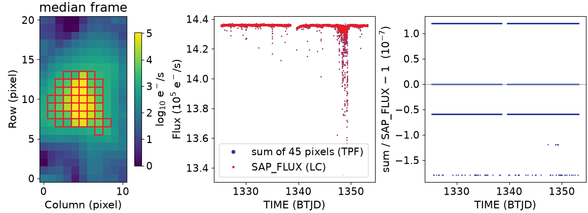
10 Data. How to reach the raw data: a file URL, lightkurve or the MAST portal
| Route | Command or address | Note |
|---|---|---|
| 1 Direct file | curl -O https://archive.stsci.edu/missions/tess/tid/s0041/0000/0002/5636/4928/tess2021204101404-s0041-0000000256364928-0212-s_lc.fits | what we used; same tree holds _tp.fits and _dvr.pdf; md5 in data_manifest.csv |
| 2 lightkurve | lk.search_lightcurve("TIC 256364928", mission="TESS", author="SPOC", exptime=120) | tested 21 Nov 2026: sectors 41, 54, 81 found; timed out on 16 Nov |
| 3 MAST portal | mast.stsci.edu, search the TIC number, product type time series | not tested here |
File name: tess<date stamp>-s<sector>-<16-digit TIC>-<pipeline id>-s_lc.fits; the URL folders are the sector and the TIC split in four.
10 Data. Every TESS data product: full frames, target pixels, light curves, basis vectors, reports, catalogs
| Product | File | Cadence | What it is | Used here |
|---|---|---|---|---|
| Full-frame image (FFI) | _ffir.fits, _ffic.fits | 30 min, then 10 min, then 200 s | the whole field of view, every star | no |
| Target pixel (TP) | _tp.fits, _fast-tp.fits | 2 min; 20 s | cut-out images of chosen stars, raw and calibrated pixels, one image per cadence | π Men c only (93.4 MB) |
| Light curve (LC) | _lc.fits, _fast-lc.fits | 2 min; 20 s | flux series derived from the target pixels: SAP, PDCSAP, background, centroid, quality | all 21 files |
| Cotrending basis vectors | _cbv.fits | per CCD | the systematic trends used to make PDCSAP; not for the 20-s data | no |
| Data validation report | _dvr.pdf | per sector | the pipeline's own transit-search report; none for 20-s data | π Men c (11 MB) |
| Catalogs | TIC, CTL, TOI, TCE | – | TIC-8: 1.7 billion point sources; TOI and TCE tables list candidates | TIC id, T mag |
Cadences: 30 min (cycles 1 and 2), 10 min (3 and 4), 200 s (5 on); 20-s products since the first extended mission. Quotes in tess_fact_sources.csv.
10 Data. Yes, the raw data are images: CCD pixels in one broad band from 600 to 1000 nm, with no spectrum
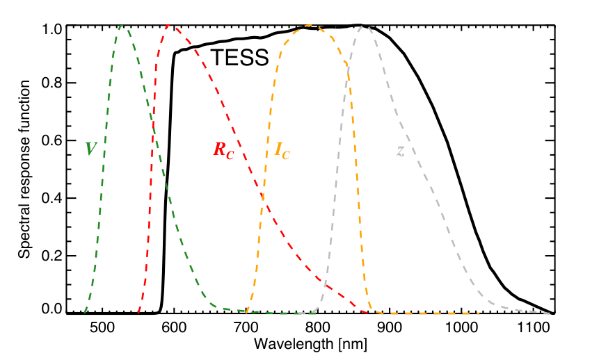
What the data are
- each pixel adds up all the light of the band: one number per pixel and cadence, no wavelength information
- colours cannot be measured; the other curves are only for comparison
- 16 CCDs: 4 cameras × 4 CCDs of 2048 × 2048 pixels, 21″ per pixel (computed)
- flag 8 (Earth point): 801 cadences in our file have no time stamp and no flux, as the manual says
10 Data. Techniques from pixels to a light curve: aperture sum, cotrending, crowding correction, full-frame and difference imaging
| Technique | What it does | In our data | Paper |
|---|---|---|---|
| Aperture photometry | add the pixels of an aperture around the star | SAP_FLUX is the sum of the 45 pixels (checked, section above) | Caldwell 2020 (SPOC) |
| Cotrending | fit and remove the trends shared by many stars | PDCSAP_FLUX is the result; basis vectors in _cbv.fits | Stumpe 2012 (PDC, Kepler) |
| Crowding and aperture correction | divide by the share of the star's light in the aperture, remove neighbours | PDCSAP/SAP = CROWDSAP/FLFRCSAP (3 files) | STScI manual |
| Full-frame photometry | build light curves from the 30-min, 10-min or 200-s images | not used here | Huang 2020 (QLP); Feinstein 2019 (eleanor) |
| Difference imaging | subtract a reference image to cope with crowded fields | not used here | Oelkers 2018 |
11 Questions. How do we know the result is trustworthy?
Benchmark
HD 118203 b: ratio 0.0553 against the tutorial's 0.0554 and Pepper's 0.05538 (−0.2 %).
Independent papers
10 of 12 published ratios and 10 of 12 radii agree within 2σ; periods 10 of 10. The differences are explained or flagged.
Diagnostics
Odd-even, phase 0.5 (WASP-18 b: 352 ppm against 341) and red noise β are measured, not assumed.
11 Questions. Likely questions and short answers
| Question | Answer |
|---|---|
| Is float32 versus float64 the cause? | No. Rounding 10-7 against noise 10-4; a float32 refit moved the ratio 0.2 %, MCMC noise. |
| Why does Rp match for the paper's planet but not its ratio? | π Men c: our R★ is 1.17, the paper's 1.10; the offsets cancel. |
| Why guided mode for three planets? | Blind BLS locks on aliases for low S/N or short P; the window is a restriction, the period is still fitted. |
| Why only the first sectors? | Run time and a clean baseline; more sectors would sharpen P, not Rp. |
| What is β? | Ratio of measured to white-noise rms in transit-length bins; 1 means white noise. |
| Why not use the catalog duration? | Blind mode does not; guided mode uses it only for the BLS duration grid. |
11 Questions. Ten questions the lecturer may ask: 1 to 5
| Question | Short answer and where it is shown |
|---|---|
| Why can a dip in brightness give a radius? | Depth ≈ (Rp/R★)², Rp = ratio × R★. R★ comes from the archive, not from us, so its error goes straight into Rp (section 7). |
| Why trust this period, not P/2 or 2P? | BLS scans 0.26 to 15 d; 8 of 10 periods agree with the catalog within 2σ. Three planets were searched near the catalog period; K2-141 b searched blind gave 5.68 d (sections 6, 7). |
| Where do the errors come from; are they complete? | MCMC, three detrending variants and R★. Red noise (β 1.0 to 3.6) is not included; with ×β the HD 189733 b pull falls from -2.0σ to -0.6σ (section 7). |
| Why does the result differ from NASA? | A difference means something only in units of its error. 9 of 10 ratios are within 2σ. Catalog values come from other papers: only 1 planet takes them from its discovery paper (section 7). |
| How do you know it is a planet, not a binary star? | All ten are confirmed planets in the NASA archive; we did no centroid vetting. We ran the odd-even test and the phase-0.5 test (WASP-18 b: 352 ± 9 ppm; Shporer et al. 341) (section 7). |
Inferred from the group's comments (the nature of the result, why, and what supports it); the lecturer has not confirmed them.
11 Questions. Ten questions the lecturer may ask: 6 to 10
| Question | Short answer and where it is shown |
|---|---|
| Do the ratio, the impact parameter and limb darkening degenerate? | Limb darkening (q1, q2) and b are fitted. LTT 9779 b: b = 0.91 and a 13 % error, mostly from detrending, not from MCMC (section 6). |
| Which assumptions can be wrong? | Circular orbits for all ten (HD 118203 b has e = 0.316, Pepper 2020), R★ from the archive, only 1 to 4 sectors, and the crowding correction (LTT 1445 A b: CROWDSAP 0.42) (sections 4, 6). |
| What does TESS give, and what does it not? | 2-min points, 27-d sectors, 21″ pixels, gaps of 1 to 8 d. Period error from 0.6 ppm (WASP-18 b) to 173 ppm (K2-141 b) (section 4). |
| Why these ten planets? Is ten enough? | They cover every size class and host-star type; the 7 to 15 d period class is empty (29 % of the catalog sample). Enough to show the method, not to say anything about a class (section 5). |
| What would you do differently? | Use every sector, fit the eccentricity, detrend with Gaussian processes, multiply the errors by β, and read the Methods of each catalog paper (sections 7, 8). |
Inferred from the group's comments (the nature of the result, why, and what supports it); the lecturer has not confirmed them.
12 Conclusions. What we rebuilt, what agrees, what does not
Plotted
Five figure types of the template paper, for ten planets; the paper's own planet gives 6.26779 d and 2.03 ± 0.07 R⊕ against 6.27 and 2.04 ± 0.05.
Agree
10 of 12 published ratios and 10 of 12 radii within 2σ; periods 10 of 10; WASP-18 b phase-0.5 flux 352 against 341 ppm.
Open
WASP-18 b ratio (+1.5 %), the template planet's depth (−6.6 % against the paper), red noise not in the quoted errors.
REPRODUCE.md in the project folder lists every command and the expected numbers.
B1 Appendix. The paper behind the template: Huang et al. 2018, π Men c
Star
π Mensae (HD 39091), G0V, V = 5.67, 18.27 ± 0.02 pc; 1.094 M☉, 1.10 R☉ (their Table 1).
Planet c
R = 2.04 ± 0.05 R⊕, P = 6.27 d, M = 4.82 ± 0.85 M⊕ from HARPS and AAT/UCLES velocities.
TESS data
Sector 1 (25 Jul to 22 Aug 2018), camera 4, CCD 2; SPOC 2-min and 30-min full-frame images; 5 transits of about 300 ppm and 3 h.
All values on this slide are read from the PDF (abstract, Table 1, Sections 2 and 3).
B2 Appendix. Fig 2 type for π Men c: five transits, ten momentum dumps, one folded dip
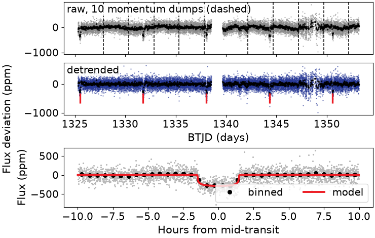
Image obtained
- 5 transits near BTJD 1325.5, 1331.8, 1338.0, 1344.3, 1350.6
- 10 momentum dumps, as in the paper
- rms 135 to 130 ppm after detrending
- folded dip lasts 3.12 h, mid-transit depth 288 ppm
- (Rp/R★)2 = 253 ppm
B3 Appendix. Fig 4 type for π Men c: each transit fitted alone, depths scatter 31 ppm
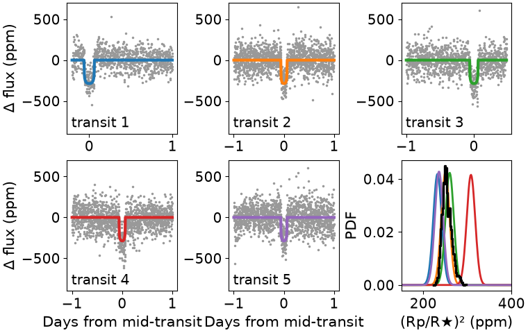
Image obtained
- per-transit depths 232, 250, 260, 308, 236 ppm
- each ±10 ppm from white noise
- real scatter 31 ppm
- χ2 = 38 for 4 dof: errors about 3 times too small
B4 Appendix. Fig 1 type for π Men c: the SPOC aperture covers 96 % of the flux

Image obtained
- stamp 11 × 21 pixels, camera 4, CCD 2
- aperture of 45 pixels holds 96 % of the summed flux
- one bright star, no second source inside the aperture
B5 Appendix. BLS on π Men c finds 6.27 d at S/N 59, with weaker aliases at P/2 and 2P
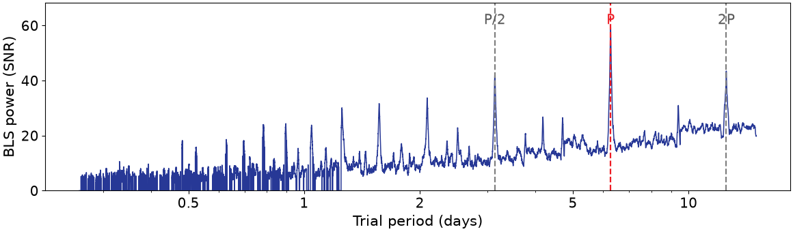
Image obtained
- best period 6.2709 d on the BLS grid, S/N 59.4
- median power 4.45, 95th percentile 16.81
- the fit refines it to 6.26778 d
A Appendix. Literature, groups A to A (1/19)
| Group, year, author | Title | arXiv or DOI |
|---|---|---|
| A 2010 Jenkins | Overview of the Kepler Science Processing Pipeline | 1001.0258 |
| A 2012 Smith | Kepler Presearch Data Conditioning II - A Bayesian Approach to Systematic Error Correction | 1203.1383 |
| A 2012 Stumpe | Kepler Presearch Data Conditioning I - Architecture and Algorithms for Error Correction in… | 1203.1382 |
| A 2014 Stumpe | Multiscale Systematic Error Correction via Wavelet-Based Bandsplitting in Kepler Data | doi:10.1086/674989 |
| A 2015 Ricker | The Transiting Exoplanet Survey Satellite | 1406.0151 |
| A 2015 Sullivan | The Transiting Exoplanet Survey Satellite: Simulations of planet detections and… | 1506.03845 |
| A 2018 Barclay | A Revised Exoplanet Yield from the Transiting Exoplanet Survey Satellite (TESS) | 1804.05050 |
| A 2018 Gaia Collaboration | Gaia Data Release 2. Summary of the contents and survey properties | 1804.09365 |
A Appendix. Literature, groups A to A (2/19)
| Group, year, author | Title | arXiv or DOI |
|---|---|---|
| A 2018 Oelkers | Precision Light Curves from TESS Full-Frame Images: A Difference Imaging Approach | 1803.02316 |
| A 2018 Stassun | The TESS Input Catalog and Candidate Target List | 1706.00495 |
| A 2018 Twicken | Kepler Data Validation I -- Architecture, Diagnostic Tests, and Data Products for Vetting… | 1803.04526 |
| A 2019 Feinstein | eleanor: An open-source tool for extracting light curves from the TESS Full-Frame Images | 1903.09152 |
| A 2019 Li | Kepler Data Validation II -- Transit Model Fitting and Multiple-Planet Search | 1812.00103 |
| A 2019 Stassun | The Revised TESS Input Catalog and Candidate Target List | 1905.10694 |
| A 2020 Caldwell | TESS Science Processing Operations Center FFI Target List Products | 2011.05495 |
| A 2020 Huang | Photometry of 10 Million Stars from the First Two Years of TESS Full Frame Images | 2011.06459 |
A Appendix. Literature, groups A to C (3/19)
| Group, year, author | Title | arXiv or DOI |
|---|---|---|
| A 2021 Guerrero | The TESS Objects of Interest Catalog from the TESS Prime Mission | 2103.12538 |
| B 2005 Kovács | A Trend Filtering Algorithm for wide field variability surveys | astro-ph/0411724 |
| B 2014 Vanderburg | A Technique for Extracting Highly Precise Photometry for the Two-Wheeled Kepler Mission | 1408.3853 |
| B 2016 Aigrain | K2SC: Flexible systematics correction and detrending of K2 light curves using Gaussian… | 1603.09167 |
| B 2017 Foreman-Mackey | Fast and scalable Gaussian process modeling with applications to astronomical time series | 1703.09710 |
| B 2019 Hippke | Wotan: Comprehensive time-series de-trending in Python | 1906.00966 |
| B 2020 Barros | Improving transit characterisation with Gaussian process modelling of stellar variability | 2001.07975 |
| C 2002 Jenkins | Some Tests to Establish Confidence in Planets Discovered by Transit Photometry | doi:10.1086/324143 |
A Appendix. Literature, groups C to C (4/19)
| Group, year, author | Title | arXiv or DOI |
|---|---|---|
| C 2002 Kovács | A box-fitting algorithm in the search for periodic transits | astro-ph/0206099 |
| C 2009 Zechmeister | The generalised Lomb-Scargle periodogram. A new formalism for the floating-mean and… | 0901.2573 |
| C 2013 Petigura | A Plateau in the Planet Population Below Twice the Size of Earth | 1304.0460 |
| C 2016 Hartman | VARTOOLS: A Program for Analyzing Astronomical Time-Series Data | 1605.06811 |
| C 2018 Ansdell | Scientific Domain Knowledge Improves Exoplanet Transit Classification with Deep Learning | 1810.13434 |
| C 2018 Pearson | Searching for Exoplanets Using Artificial Intelligence | 1706.04319 |
| C 2018 Shallue | Identifying Exoplanets with Deep Learning: A Five Planet Resonant Chain around Kepler-80… | 1712.05044 |
| C 2018 VanderPlas | Understanding the Lomb-Scargle Periodogram | 1703.09824 |
A Appendix. Literature, groups C to D (5/19)
| Group, year, author | Title | arXiv or DOI |
|---|---|---|
| C 2019 Dattilo | Identifying Exoplanets with Deep Learning II: Two New Super-Earths Uncovered by a Neural… | 1903.10507 |
| C 2019 Heller | Transit least-squares survey - I. Discovery and validation of an Earth-sized planet in the… | 1904.00651 |
| C 2019 Hippke | Transit Least Squares: Optimized transit detection algorithm to search for periodic… | 1901.02015 |
| C 2019 Yu | Identifying Exoplanets with Deep Learning III: Automated Triage and Vetting of TESS… | 1904.02726 |
| C 2020 Osborn | Rapid Classification of TESS Planet Candidates with Convolutional Neural Networks | 1902.08544 |
| C 2021 Armstrong | Exoplanet Validation with Machine Learning: 50 new validated Kepler planets | 2008.10516 |
| C 2021 Eisner | Planet Hunters TESS II: Findings from the first two years of TESS | 2011.13944 |
| D 1992 Gelman | Inference from Iterative Simulation Using Multiple Sequences | doi:10.1214/ss/1177011136 (no PDF) |
A Appendix. Literature, groups D to D (6/19)
| Group, year, author | Title | arXiv or DOI |
|---|---|---|
| D 2002 Mandel | Analytic Light Curves for Planetary Transit Searches | doi:10.1086/345520 |
| D 2003 Seager | On the Unique Solution of Planet and Star Parameters from an Extrasolar Planet Transit… | astro-ph/0206228 |
| D 2006 Pont | The effect of red noise on planetary transit detection | astro-ph/0608597 |
| D 2008 Carter | Analytic Approximations for Transit Light Curve Observables, Uncertainties, and Covariances | 0805.0238 |
| D 2010 Goodman | Ensemble samplers with affine invariance | doi:10.2140/camcos.2010.5.65 |
| D 2010 Hogg | Data analysis recipes: Fitting a model to data | 1008.4686 |
| D 2010 Kipping | Binning is sinning: morphological light-curve distortions due to finite integration time | 1004.3741 |
| D 2010 Winn | Transits and Occultations | 1001.2010 |
A Appendix. Literature, groups D to D (7/19)
| Group, year, author | Title | arXiv or DOI |
|---|---|---|
| D 2013 Eastman | EXOFAST: A fast exoplanetary fitting suite in IDL | 1206.5798 |
| D 2013 Foreman-Mackey | emcee: The MCMC Hammer | 1202.3665 |
| D 2013 Kipping | Efficient, uninformative sampling of limb darkening coefficients for two-parameter laws | 1308.0009 |
| D 2015 Kreidberg | batman: BAsic Transit Model cAlculatioN in Python | 1507.08285 |
| D 2017 Claret | Limb and gravity-darkening coefficients for the TESS satellite at several metallicities,… | 1804.10295 |
| D 2017 Sharma | Markov Chain Monte Carlo Methods for Bayesian Data Analysis in Astronomy | 1706.01629 |
| D 2018 Hogg | Data analysis recipes: Using Markov Chain Monte Carlo | 1710.06068 |
| D 2019 Espinoza | Juliet: a versatile modelling tool for transiting and non-transiting exoplanetary systems | 1812.08549 |
A Appendix. Literature, groups D to E (8/19)
| Group, year, author | Title | arXiv or DOI |
|---|---|---|
| D 2020 Agol | Analytic Planetary Transit Light Curves and Derivatives for Stars with Polynomial Limb… | 1908.03222 |
| D 2021 Foreman-Mackey | exoplanet: Gradient-based probabilistic inference for exoplanet data & other astronomical… | 2105.01994 |
| E 2011 Torres | Modeling Kepler transit light curves as false positives: Rejection of blend scenarios for… | 1008.4393 |
| E 2012 Morton | An Efficient Automated Validation Procedure for Exoplanet Transit Candidates | 1206.1568 |
| E 2013 Bryson | Identification of Background False Positives from Kepler Data | 1303.0052 |
| E 2013 Fressin | The false positive rate of Kepler and the occurrence of planets | 1301.0842 |
| E 2016 Morton | FALSE POSITIVE PROBABILITIES FOR ALL KEPLER OBJECTS OF INTEREST: 1284 NEWLY VALIDATED… | doi:10.3847/0004-637x/822/2/86 |
| E 2016 Santerne | SOPHIE velocimetry of Kepler transit candidates XVII. The physical properties of giant… | 1511.00643 |
A Appendix. Literature, groups E to F (9/19)
| Group, year, author | Title | arXiv or DOI |
|---|---|---|
| E 2017 Collins | AstroImageJ: Image Processing and Photometric Extraction for Ultra-Precise Astronomical… | 1601.02622 |
| E 2017 Günther | Centroid vetting of transiting planet candidates from the Next Generation Transit Survey | 1707.07978 |
| E 2021 Giacalone | Vetting of 384 TESS Objects of Interest with TRICERATOPS and Statistical Validation of 12… | 2002.00691 |
| F 2008 Dotter | The Dartmouth Stellar Evolution Database | 0804.4473 |
| F 2010 Torres | Accurate masses and radii of normal stars: modern results and applications | 0908.2624 |
| F 2013 Huber | Fundamental Properties of Stars using Asteroseismology from Kepler & CoRoT and… | 1210.0012 |
| F 2015 Dressing | The Occurrence of Potentially Habitable Planets Orbiting M Dwarfs Estimated from the Full… | 1501.01623 |
| F 2015 Mann | How to Constrain Your M Dwarf: measuring effective temperature, bolometric luminosity,… | 1501.01635 |
A Appendix. Literature, groups F to G (10/19)
| Group, year, author | Title | arXiv or DOI |
|---|---|---|
| F 2015 Winn | The Occurrence and Architecture of Exoplanetary Systems | 1410.4199 |
| F 2018 Berger | Revised Radii of Kepler Stars and Planets Using Gaia Data Release 2 | 1805.00231 |
| F 2018 Fulton | The California Kepler Survey VII. Precise Planet Radii Leveraging Gaia DR2 Reveal the… | 1805.01453 |
| G 2007 Seager | Mass-Radius Relationships for Solid Exoplanets | 0707.2895 |
| G 2012 Howard | Planet Occurrence within 0.25 AU of Solar-type Stars from Kepler | 1103.2541 |
| G 2013 Owen | Kepler planets: a tale of evaporation | 1303.3899 |
| G 2014 Lopez | The Role of Core Mass in Controlling Evaporation: the Kepler Radius Distribution and the… | 1305.0269 |
| G 2014 Weiss | The Mass-Radius Relation for 65 Exoplanets Smaller than 4 Earth Radii | 1312.0936 |
A Appendix. Literature, groups G to G (11/19)
| Group, year, author | Title | arXiv or DOI |
|---|---|---|
| G 2015 Burke | Terrestrial Planet Occurrence Rates for the Kepler GK Dwarf Sample | 1506.04175 |
| G 2015 Rogers | MOST 1.6 EARTH-RADIUS PLANETS ARE NOT ROCKY | doi:10.1088/0004-637x/801/1/41 |
| G 2016 Wolfgang | Probabilistic Mass-Radius Relationship for Sub-Neptune-Sized Planets | 1504.07557 |
| G 2016 Zeng | Mass-Radius Relation for Rocky Planets based on PREM | 1512.08827 |
| G 2017 Chen | Probabilistic Forecasting of the Masses and Radii of Other Worlds | 1603.08614 |
| G 2017 Fulton | The California-Kepler Survey. III. A Gap in the Radius Distribution of Small Planets | 1703.10375 |
| G 2017 Owen | The evaporation valley in the Kepler planets | 1705.10810 |
| G 2018 Petigura | The California-Kepler Survey. IV. Metal-rich Stars Host a Greater Diversity of Planets | 1712.04042 |
A Appendix. Literature, groups G to H (12/19)
| Group, year, author | Title | arXiv or DOI |
|---|---|---|
| G 2018 Van Eylen | An asteroseismic view of the radius valley: stripped cores, not born rocky | 1710.05398 |
| G 2019 Gupta | Sculpting the Valley in the Radius Distribution of Small Exoplanets as a by-product of… | 1811.03202 |
| G 2019 Hardegree-Ullman | Scaling K2. I. Revised Parameters for 222,088 K2 Stars and a K2 Planet Radius Valley at 1.9… | doi:10.3847/1538-4365/ab7230 |
| G 2019 Hsu | Occurrence Rates of Planets orbiting FGK Stars: Combining Kepler DR25, Gaia DR2 and… | 1902.01417 |
| G 2019 Zeng | Growth Model Interpretation of Planet Size Distribution | 1906.04253 |
| G 2020 Kunimoto | Searching the Entirety of Kepler Data. II. Occurrence Rate Estimates for FGK Stars | 2004.05296 |
| G 2021 Bryson | The Occurrence of Rocky Habitable Zone Planets Around Solar-Like Stars from Kepler Data | 2010.14812 |
| H 1995 Mayor | A Jupiter-mass companion to a solar-type star | doi:10.1038/378355a0 (no PDF) |
A Appendix. Literature, groups H to H (13/19)
| Group, year, author | Title | arXiv or DOI |
|---|---|---|
| H 2000 Charbonneau | Detection of Planetary Transits Across a Sun-like Star | astro-ph/9911436 |
| H 2000 Henry | A Transiting “51 Peg–like” Planet | doi:10.1086/312458 |
| H 2002 Charbonneau | Detection of an Extrasolar Planet Atmosphere | astro-ph/0111544 |
| H 2007 Knutson | A map of the day-night contrast of the extrasolar planet HD 189733b | 0705.0993 |
| H 2010 Borucki | Kepler Planet-Detection Mission: Introduction and First Results | doi:10.1126/science.1185402 |
| H 2013 Batalha | Planetary Candidates Observed by Kepler, III: Analysis of the First 16 Months of Data | 1202.5852 |
| H 2013 Kopparapu | Habitable Zones Around Main-Sequence Stars: New Estimates | 1301.6674 |
| H 2014 Howell | The K2 Mission: Characterization and Early results | 1402.5163 |
A Appendix. Literature, groups H to H (14/19)
| Group, year, author | Title | arXiv or DOI |
|---|---|---|
| H 2014 Kreidberg | Clouds in the atmosphere of the super-Earth exoplanet GJ 1214b | 1401.0022 |
| H 2016 Fischer | State of the Field: Extreme Precision Radial Velocities | 1602.07939 |
| H 2016 Sing | A continuum from clear to cloudy hot-Jupiter exoplanets without primordial water depletion | 1512.04341 |
| H 2017 Gillon | Seven temperate terrestrial planets around the nearby ultracool dwarf star TRAPPIST-1 | 1703.01424 |
| H 2018 Gandolfi | TESS's first planet: a super-Earth transiting the naked-eye star $π$ Mensae | 1809.07573 |
| H 2018 Huang | TESS Discovery of a Transiting Super-Earth in the $π$ Mensae System | 1809.05967 |
| H 2018 Kempton | A Framework for Prioritizing the TESS Planetary Candidates Most Amenable to Atmospheric… | 1805.03671 |
| H 2018 Thompson | Planetary Candidates Observed by Kepler. VIII. A Fully Automated Catalog With Measured… | 1710.06758 |
A Appendix. Literature, groups H to I (15/19)
| Group, year, author | Title | arXiv or DOI |
|---|---|---|
| H 2019 Dragomir | TESS delivers its first Earth-sized planet and a warm sub-Neptune | 1901.00051 |
| H 2019 Vanderspek | TESS Discovery of an ultra-short-period planet around the nearby M dwarf LHS 3844 | 1809.07242 |
| I 2005 Bouchy | ELODIE metallicity-biased search for transiting Hot Jupiters II. A very hot Jupiter… | astro-ph/0510119 |
| I 2009 Hellier | An orbital period of 0.94 days for the hot-Jupiter planet WASP-18b | doi:10.1038/nature08245 (no PDF) |
| I 2012 Hellier | Seven transiting hot Jupiters from WASP-South, Euler and TRAPPIST: WASP-47b, WASP-55b,… | doi:10.1111/j.1365-2966.2012.21780.x |
| I 2015 Berta-Thompson | A rocky planet transiting a nearby low-mass star | 1511.03550 |
| I 2016 Crossfield | 197 Candidates and 104 Validated Planets in K2's First Five Fields | 1607.05263 |
| I 2018 Malavolta | An ultra-short period rocky super-Earth with a secondary eclipse and a Neptune-like… | 1801.03502 |
A Appendix. Literature, groups I to J (16/19)
| Group, year, author | Title | arXiv or DOI |
|---|---|---|
| I 2019 Günther | A super-Earth and two sub-Neptunes transiting the nearby and quiet M dwarf TOI-270 | 1903.06107 |
| I 2019 Newton | TESS Hunt for Young and Maturing Exoplanets (THYME): A Planet in the 45 Myr… | doi:10.3847/2041-8213/ab2988 |
| I 2020 Jenkins | An Ultra-Hot Neptune in the Neptune desert | 2009.12832 |
| I 2020 Pepper | TESS Reveals HD 118203 b to be a Transiting Planet | 1911.05150 |
| I 2020 Plavchan | A planet within the debris disk around the pre-main-sequence star AU Microscopii | 2006.13248 |
| I 2021 Winters | A Second Planet Transiting LTT 1445A and a Determination of the Masses of Both Worlds | 2107.14737 |
| J 2010 Eastman | Achieving better than 1 minute accuracy in the Heliocentric and Barycentric Julian Dates | 1005.4415 |
| J 2019 Shporer | TESS full orbital phase curve of the WASP-18b system | 1811.06020 |
A Appendix. Literature, groups K to K (17/19)
| Group, year, author | Title | arXiv or DOI |
|---|---|---|
| K 1984 Borucki | The photometric method of detecting other planetary systems | doi:10.1016/0019-1035(84)90102-7 (no PDF) |
| K 1992 Wolszczan | A planetary system around the millisecond pulsar PSR1257 + 12 | doi:10.1038/355145a0 (no PDF) |
| K 2003 Konacki | An extrasolar planet that transits the disk of its parent star | doi:10.1038/nature01379 (no PDF) |
| K 2004 Alonso | TrES-1: The Transiting Planet of a Bright K0 V Star | doi:10.1086/425256 |
| K 2004 Bakos | Wide‐Field Millimagnitude Photometry with the HAT: A Tool for Extrasolar Planet Detection | doi:10.1086/382735 |
| K 2004 Bond | OGLE 2003-BLG-235/MOA 2003-BLG-53: A planetary microlensing event | astro-ph/0404309 |
| K 2005 Charbonneau | Detection of Thermal Emission from an Extrasolar Planet | astro-ph/0503457 |
| K 2005 Deming | Infrared radiation from an extrasolar planet | astro-ph/0503554 |
A Appendix. Literature, groups K to K (18/19)
| Group, year, author | Title | arXiv or DOI |
|---|---|---|
| K 2006 Gardner | The James Webb Space Telescope | astro-ph/0606175 |
| K 2006 Pollacco | The WASP Project and the SuperWASP Cameras | astro-ph/0608454 |
| K 2007 Pepper | The Kilodegree Extremely Little Telescope (KELT): A Small Robotic Telescope for Large-Area… | 0704.0460 |
| K 2008 Barge | Transiting exoplanets from the CoRoT space mission I - CoRoT-Exo-1b: a low-density… | 0803.3202 |
| K 2008 Marois | Direct Imaging of Multiple Planets Orbiting the Star HR 8799 | 0811.2606 |
| K 2008 Nutzman | Design Considerations for a Ground-based Transit Search for Habitable Planets Orbiting M… | 0709.2879 |
| K 2009 Auvergne | The CoRoT satellite in flight : description and performance | 0901.2206 |
| K 2010 Koch | Kepler Mission Design, Realized Photometric Performance, and Early Science | 1001.0268 |
A Appendix. Literature, groups K to K (19/19)
| Group, year, author | Title | arXiv or DOI |
|---|---|---|
| K 2011 Borucki | Characteristics of Kepler Planetary Candidates Based on the First Data Set: The Majority… | 1006.2799 |
| K 2014 Rauer | The PLATO 2.0 Mission | 1310.0696 |
| K 2015 Vanderburg | Planetary Candidates from the First Year of the K2 Mission | 1511.07820 |
| K 2021 Benz | The CHEOPS mission | 2009.11633 |
| K 2021 Pepe | ESPRESSO@VLT -- On-sky performance and first results | 2010.00316 |
| K 2023 Ahrer | Early Release Science of the exoplanet WASP-39b with JWST NIRCam | 2211.10489 |